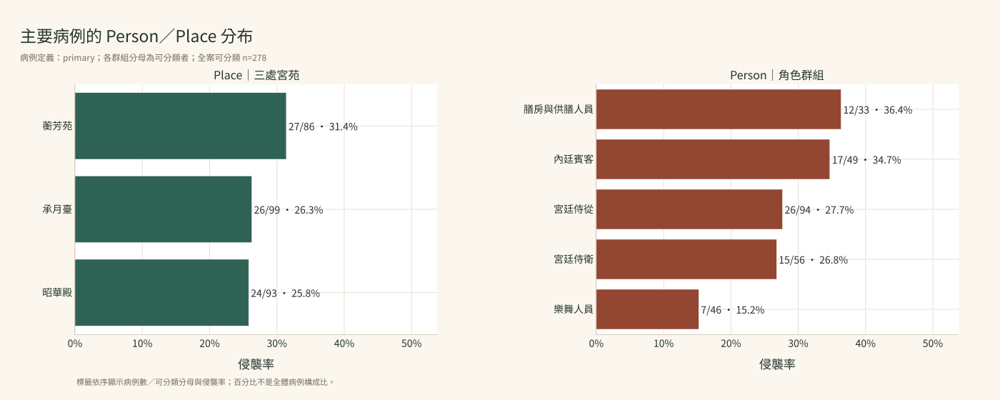
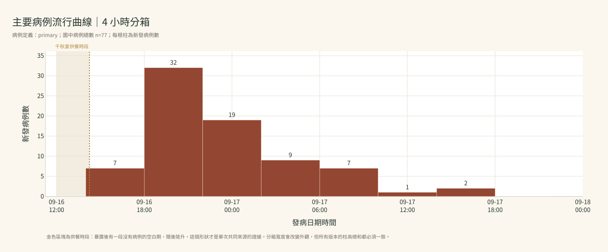
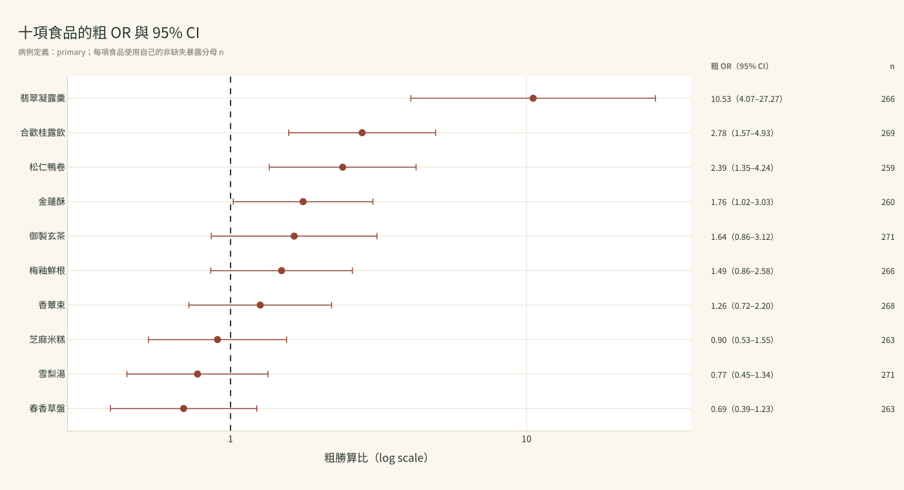
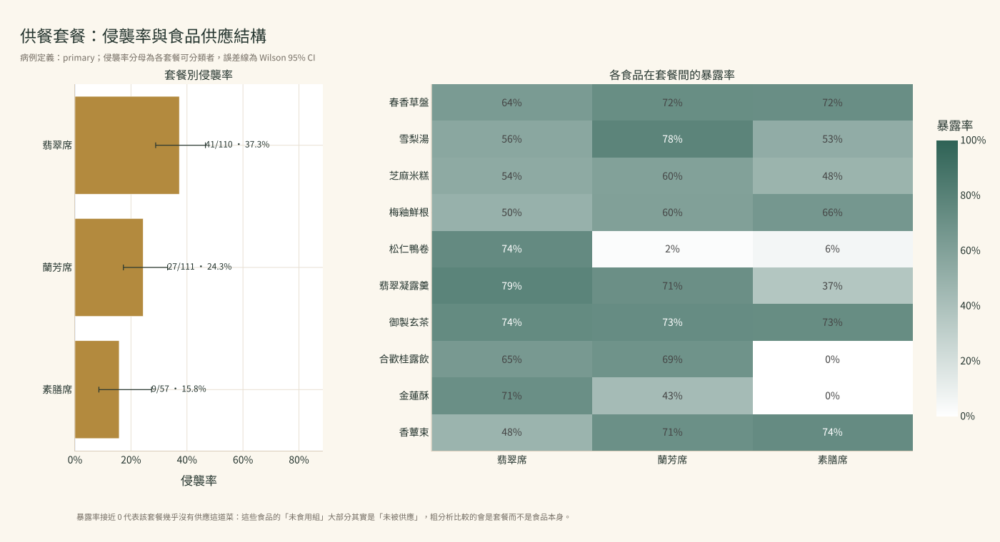
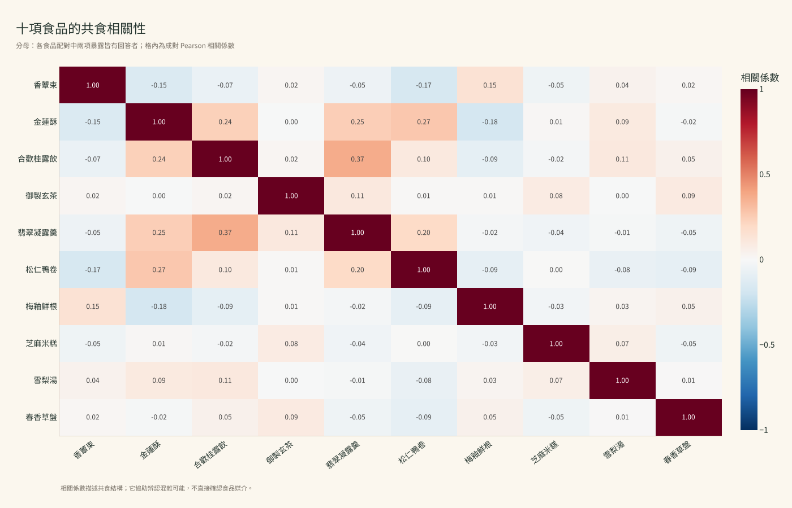
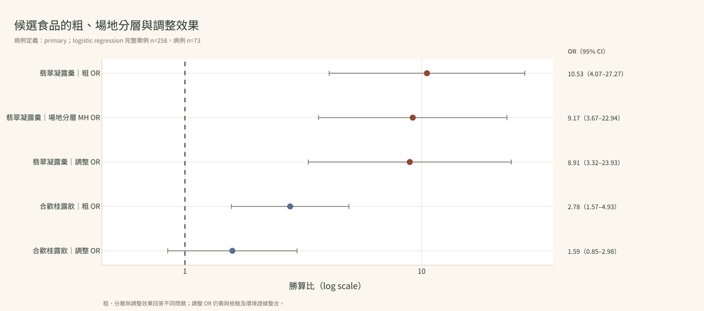
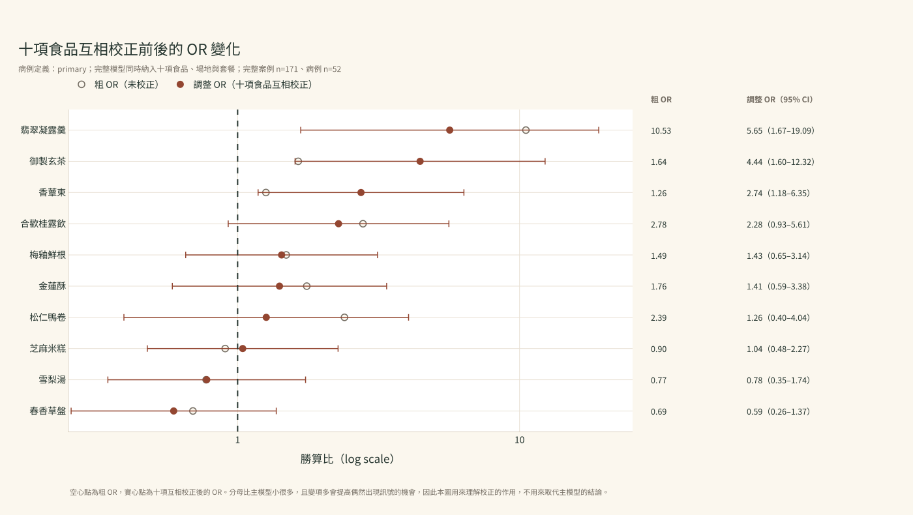
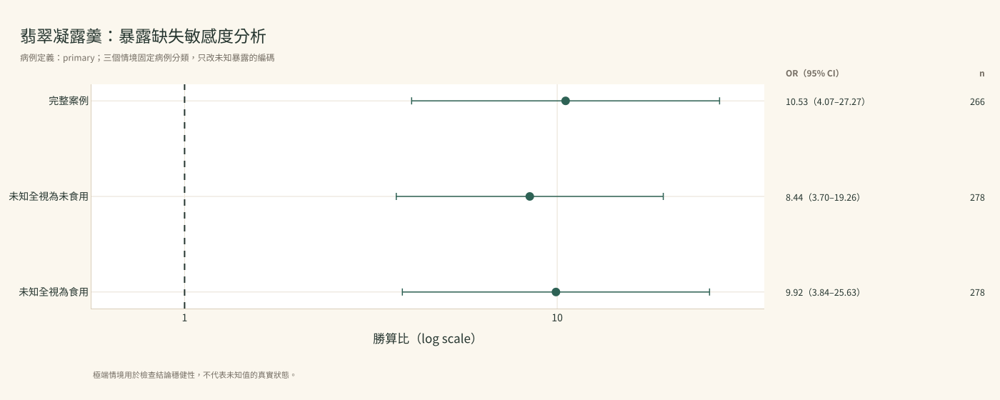
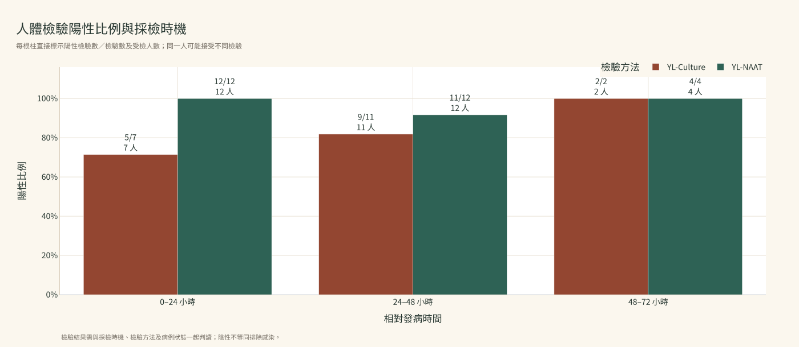
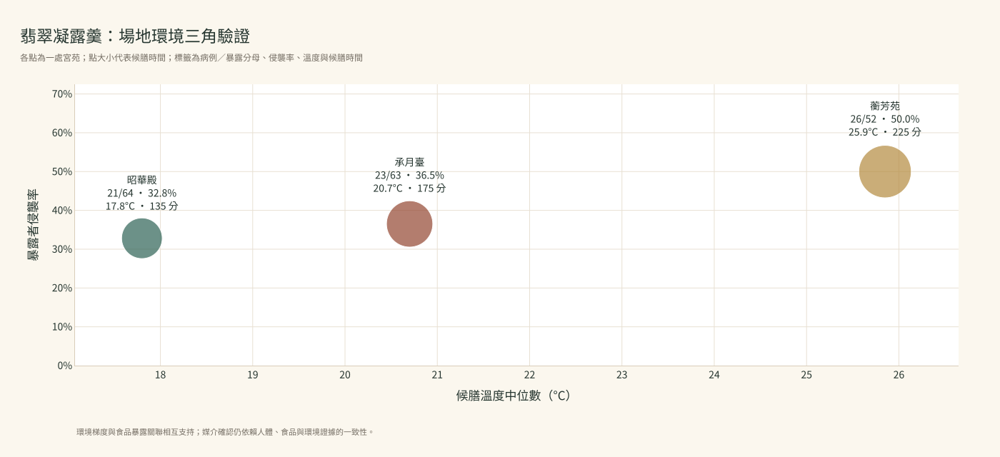

01
可能暴露
千秋宴在三處宮苑開席
昭華殿、蘅芳苑與承月臺共用部分菜單，也各有不同供餐批次。這個時間點成為後續計算潛伏期的共同參考。
承熙十七年・千秋宴翌晨
金玉良炎早已載入承熙國的疫防醫典，得名於早年第一位留下疾病紀錄的金玉良。 如今千秋宴後出現相似通報，你帶領一支現代團隊穿越而來，依既有手冊判斷是否啟動群聚調查。
你的任務在模擬疫情情境中，從群聚判定、病例定義到暴露與檢驗證據整合，逐步搭配 AI、Python 與資料視覺化，完成一份具備完整證據鏈的疫情調查報告。
本案例中的疾病、病原、檢驗、人物、國家、場所與事件，均為本課程原創的虛構合成設定。與 AI 協作前，務必確認資料已完成去識別化，且不含可直接或間接識別個人身分的敏感資訊。
宮中疫報紀事
這條時間線呈現資料如何隨調查行動逐步形成，學員會依序取得每一階段真正需要的案卷。
昭華殿、蘅芳苑與承月臺共用部分菜單，也各有不同供餐批次。這個時間點成為後續計算潛伏期的共同參考。
疫報司收到本案第一份嘔吐、腹瀉通報；此時先記錄症狀與發病時間，等待後續通報確認是否形成異常訊號。
七人有嘔吐或腹瀉，其中五人提到曾參加千秋宴。這批零散敘述將用於群聚啟動判定。
金玉良炎是承熙國已知疾病，手冊提供通報條件、採檢時機、病例定義與群聚啟動門檻；調查資料用來判定本次事件。
事件登錄為疑似金玉良炎群聚。團隊立即保留檢體與剩餘食品，同時向主辦單位索取名冊、菜單與供餐紀錄。
名冊形成分母，主動訪談形成 line list，早期訪談與菜單形成正式問卷；檢驗與環境調查則在另一條線上同步進行。
金玉良炎是承熙國既有通報疾病。調查小組目前持有七份疑似通報與疾病工作手冊，任務是判定是否投入群聚調查資源。
此刻要回答：目前通報是否達到《金玉良炎防治工作手冊》的群聚啟動門檻？
先確認資料從哪裡來、為什麼此刻出現，再展開查看實際內容。
initial_reports.csv疫報司把翌晨收到的七份個別急報，依通報時間、症狀與千秋宴關聯整理成表。
先確認相似症狀是否在 48 小時內集中，並逐筆判斷是否符合手冊的群聚啟動條件。
通報時間條＋啟動條件判定表
一列代表什麼：一列是一份初始通報；共 7 列，因此完整顯示。符合臨床條件與疑似通報是分析時算出來的欄位，原始表裡沒有。
| report_id | report_time | person_id | attended_banquet | vomiting | diarrhea_24h |
|---|---|---|---|---|---|
| IR001 | 05:40 | P0233 | 1 | 1 | 0 |
| IR002 | 05:48 | P0196 | 1 | 0 | 4 |
| IR003 | 05:55 | P0202 | 1 | 1 | 3 |
| IR004 | 06:04 | P0149 | 1 | 1 | 0 |
| IR005 | 06:12 | P0150 | 1 | 0 | 5 |
| IR006 | 06:18 | NA | 0 | 1 | 0 |
| IR007 | 06:25 | NA | 0 | 0 | 1 |
disease_field_manual.md御醫署在本次千秋宴之前已發布的正式疾病手冊，是承熙國既有公衛知識。
提供群聚門檻、病例定義、潛伏期、採檢時機與證據判讀規則，讓分析條件在看結果前固定。
通報時間條＋啟動條件判定表
一列代表什麼：Markdown 規則文件；預覽時顯示全文。
正在讀取資料預覽…
接下來的分析方向把手冊的臨床條件與宴會關聯轉成逐筆判定欄位，再將符合人數與群聚門檻比較。
把資料表、分母、產出與判讀範圍寫成分析規格。
判定每筆通報是否符合疑似條件，並決定是否啟動群聚調查。
啟動後索取完整宴會名冊與訪談資料，建立事件分母與病例名單。
先觀察完成的圖表與數字如何回答本卷問題，再核對分母、判讀與限制。
講師判讀：已達啟動門檻，事件登錄為「疑似金玉良炎群聚」；下一階段以名冊、檢驗與暴露資料確認疾病與媒介。七份急報全部落在 45 分鐘內，時間聚集本身也支持共同事件。
不能過度解讀：通報身分不等於病例身分。這五個人稍後都要重新依主要病例定義判定，不會因為最早被通報就自動算成病例；兩名未參加宴會者則根本不會進入事件分母。
數字來源：講師 Notebook 第 1.2 格讀取 initial_reports.csv，把手冊的臨床條件與活動關聯分成兩個可稽核欄位後逐筆判定，並以 assert 固定 7 → 6 → 5 與 outbreak_triggered = True。
# A0.4｜讀取初始通報，將手冊門檻轉成可稽核欄位
import pandas as pd
# 手冊 §8「群聚啟動門檻」的兩個常數，寫成變數以便日後追溯出處
MANUAL_CLUSTER_THRESHOLD = 3 # 疑似通報達 3 名即啟動
MANUAL_TRIGGER_WINDOW_HOURS = 48 # 計算通報聚集所用的時間窗
reports = pd.read_csv("initial_reports.csv", parse_dates=["report_time"])
# 臨床條件與宴會關聯刻意分成兩欄，而不是一次算完 ——
# 這樣任何人都能逐筆核對「這份通報是卡在症狀不夠，還是卡在沒有宴會關聯」
reports["meets_clinical_criteria"] = (
reports["vomiting"].ge(1) | reports["diarrhea_24h"].ge(3)
)
reports["has_event_link"] = reports["attended_banquet"].eq(1)
reports["suspected_report"] = (
reports["meets_clinical_criteria"] & reports["has_event_link"]
)
# 通報聚集的時間跨度：從第一份到最後一份通報之間相隔幾小時
report_span_hours = (
reports["report_time"].max() - reports["report_time"].min()
).total_seconds() / 3600
n_suspected = int(reports["suspected_report"].sum())
outbreak_triggered = bool(
n_suspected >= MANUAL_CLUSTER_THRESHOLD
and report_span_hours <= MANUAL_TRIGGER_WINDOW_HOURS
)
print(reports[["report_id", "meets_clinical_criteria", "has_event_link", "suspected_report"]])
print({"reports": len(reports),
"meets_clinical": int(reports["meets_clinical_criteria"].sum()),
"has_event_link": int(reports["has_event_link"].sum()),
"suspected_reports": n_suspected,
"outbreak_triggered": outbreak_triggered})看完講師成果與分析方法後，再展開取得可貼到對話式 LLM 的完整 Prompt。
先把本卷列出的資料檔上傳至你使用的對話式 LLM，再複製 Prompt。每一則都包含事件背景、現有資料、分析問題與成果要求，可作為新對話的起始訊息。
我正在進行「金玉良炎」虛構疫情調查案例的公衛資料分析練習，會在網頁版對話式 LLM 中與你協作，目前還不會自己寫 Python。 【事件背景】 金玉良炎是承熙國既有通報疾病。調查小組目前持有七份疑似通報與疾病工作手冊，任務是判定是否投入群聚調查資源。 【目前取得的調查資料】 - initial_reports.csv：最初七份急報整理表 - disease_field_manual.md：金玉良炎防治工作手冊 【這一階段的公衛問題】 目前通報是否達到《金玉良炎防治工作手冊》的群聚啟動門檻？ 【建議的分析方向】 把手冊的臨床條件與宴會關聯轉成逐筆判定欄位，再將符合人數與群聚門檻比較。 【這次想完成的調查工作】 請先用白話告訴我：每一份急報要符合哪些條件，才算和這場宴會有關的疑似病例。接著幫我把 7 份通報逐筆整理成容易核對的表格。 【希望得到的調查成果】 逐筆條件判定表、符合人數、手冊門檻與 outbreak_triggered 布林值。 如果需要圖表，可使用：通報時間條＋啟動條件判定表 畫面希望採用：米白底、朱砂紅標記符合通報、墨綠標記啟動；標題寫明 48 小時門檻，表格保留逐筆 ID。 【如果這一步需要畫圖】 請使用 Plotly 製作可以互動的圖，並讓右上角可以下載 SVG。請替最後的調查報告保留這張圖；如何命名與保存由你處理，完成後告訴我即可。圖表要寫清楚分析對象與分母，中文字、日期和食品名稱保持可讀，滑鼠移到圖上時能看到這次真正使用的人數、比例或信賴區間。配色沿用米白、墨綠、朱砂紅與金色。 請先閱讀上述事件背景、資料與欄位說明，用白話告訴我哪些資料能回答這個問題、應使用誰作為分母，以及你準備怎麼做。如果我尚未提供必要檔案或欄位，請先明確列出缺少的內容，不要自行假設。確認後，再提供一格可直接在 Google Colab 執行的完整 Python 程式。程式內部的資料名稱與寫法由你安排；請加入繁體中文註解，完成後告訴我建立了哪些分析成果、要檢查哪些數字，以及下一步可以如何沿用。
我正在進行「金玉良炎」虛構疫情調查案例的公衛資料分析練習，會在網頁版對話式 LLM 中與你協作，目前還不會自己寫 Python。 【事件背景】 金玉良炎是承熙國既有通報疾病。調查小組目前持有七份疑似通報與疾病工作手冊，任務是判定是否投入群聚調查資源。 【目前取得的調查資料】 - initial_reports.csv：最初七份急報整理表 - disease_field_manual.md：金玉良炎防治工作手冊 【這一階段的公衛問題】 目前通報是否達到《金玉良炎防治工作手冊》的群聚啟動門檻？ 【建議的分析方向】 把手冊的臨床條件與宴會關聯轉成逐筆判定欄位，再將符合人數與群聚門檻比較。 【這次想完成的調查工作】 請幫我計算目前有幾人同時符合症狀條件和宴會關聯，並把每個人的判定理由保留在表格裡，讓我可以人工檢查。 【希望得到的調查成果】 逐筆條件判定表、符合人數、手冊門檻與 outbreak_triggered 布林值。 如果需要圖表，可使用：通報時間條＋啟動條件判定表 畫面希望採用：米白底、朱砂紅標記符合通報、墨綠標記啟動；標題寫明 48 小時門檻，表格保留逐筆 ID。 【如果這一步需要畫圖】 請使用 Plotly 製作可以互動的圖，並讓右上角可以下載 SVG。請替最後的調查報告保留這張圖；如何命名與保存由你處理，完成後告訴我即可。圖表要寫清楚分析對象與分母，中文字、日期和食品名稱保持可讀，滑鼠移到圖上時能看到這次真正使用的人數、比例或信賴區間。配色沿用米白、墨綠、朱砂紅與金色。 請先閱讀上述事件背景、資料與欄位說明，用白話告訴我哪些資料能回答這個問題、應使用誰作為分母，以及你準備怎麼做。如果我尚未提供必要檔案或欄位，請先明確列出缺少的內容，不要自行假設。確認後，再提供一格可直接在 Google Colab 執行的完整 Python 程式。程式內部的資料名稱與寫法由你安排；請加入繁體中文註解，完成後告訴我建立了哪些分析成果、要檢查哪些數字，以及下一步可以如何沿用。
我正在進行「金玉良炎」虛構疫情調查案例的公衛資料分析練習，會在網頁版對話式 LLM 中與你協作，目前還不會自己寫 Python。 【事件背景】 金玉良炎是承熙國既有通報疾病。調查小組目前持有七份疑似通報與疾病工作手冊，任務是判定是否投入群聚調查資源。 【目前取得的調查資料】 - initial_reports.csv：最初七份急報整理表 - disease_field_manual.md：金玉良炎防治工作手冊 【這一階段的公衛問題】 目前通報是否達到《金玉良炎防治工作手冊》的群聚啟動門檻？ 【建議的分析方向】 把手冊的臨床條件與宴會關聯轉成逐筆判定欄位，再將符合人數與群聚門檻比較。 【這次想完成的調查工作】 請把符合人數和工作手冊的 3 人門檻比較，用一句話告訴我是否啟動調查，再說明這個決定目前能代表什麼。 【希望得到的調查成果】 逐筆條件判定表、符合人數、手冊門檻與 outbreak_triggered 布林值。 如果需要圖表，可使用：通報時間條＋啟動條件判定表 畫面希望採用：米白底、朱砂紅標記符合通報、墨綠標記啟動；標題寫明 48 小時門檻，表格保留逐筆 ID。 【如果這一步需要畫圖】 請使用 Plotly 製作可以互動的圖，並讓右上角可以下載 SVG。請替最後的調查報告保留這張圖；如何命名與保存由你處理，完成後告訴我即可。圖表要寫清楚分析對象與分母，中文字、日期和食品名稱保持可讀，滑鼠移到圖上時能看到這次真正使用的人數、比例或信賴區間。配色沿用米白、墨綠、朱砂紅與金色。 請先閱讀上述事件背景、資料與欄位說明，用白話告訴我哪些資料能回答這個問題、應使用誰作為分母，以及你準備怎麼做。如果我尚未提供必要檔案或欄位，請先明確列出缺少的內容，不要自行假設。確認後，再提供一格可直接在 Google Colab 執行的完整 Python 程式。程式內部的資料名稱與寫法由你安排；請加入繁體中文註解，完成後告訴我建立了哪些分析成果、要檢查哪些數字，以及下一步可以如何沿用。
門檻判定完成後，調查小組索取完整名冊並展開第一輪訪談，建立事件分母與病例分類。
進入「建立事件分母與病例名單」主辦單位交出 312 人名冊、3,120 列食品暴露、180 列菜單與 75 列資料字典，另附八名早期病例的開放式訪談。學員先確認每張表的分析單位、主鍵與列數，再處理完整回覆、資訊不足與宴前發病，建立可稽核的病例分類，最後用早期線索與菜單決定正式問卷要問哪些食品。
此刻要回答：312 名參與者中，誰有足夠資料可判定？不同病例定義會辨認多少病例？
先確認資料從哪裡來、為什麼此刻出現，再展開查看實際內容。
person_line_list.csv主辦單位的 312 人與會名冊，與調查人員第一輪主動訪談、症狀時間及採檢狀態合併而成。
建立完整事件分母，並讓每名參與者都能依同一套規則分類病例及描述 Person／Time／Place。
資料盤點表＋病例分類流程圖＋定義敏感度長條圖＋問卷欄位藍圖
一列代表什麼：一列是一名參與者；共 312 列，預覽前 10 列。
正在讀取資料預覽…
food_exposure.csv依早期訪談與菜單設計標準問卷，再以參與者訪談和可用供餐紀錄完成。
為每項食品建立食用／未食用／未知紀錄，才能計算食品別侵襲率、2×2 表、OR 與共食關係。
資料盤點表＋病例分類流程圖＋定義敏感度長條圖＋問卷欄位藍圖
一列代表什麼：一列是一名參與者×一項食品；共 3,120 列，預覽前 10 列。
正在讀取資料預覽…
menu_by_site.csv千秋宴主辦單位與尚膳署提供的場地菜單、餐套、供餐批次及實際上菜時間。
確認早期病例提到的食品是否真的在其場地供應，並辨識共享食品、場地限定食品與批次結構。
資料盤點表＋病例分類流程圖＋定義敏感度長條圖＋問卷欄位藍圖
一列代表什麼：一列是一個場地×梯次×餐套×食品組合；共 180 列，完整顯示。
正在讀取資料預覽…
early_interviews.csv調查人員先對最早發病的八名參與者進行開放式訪談，整理他們記得的食品與活動。
用早期線索形成正式問卷的候選項目；此時只建立假說，尚未估計食品效果。
資料盤點表＋病例分類流程圖＋定義敏感度長條圖＋問卷欄位藍圖
一列代表什麼：一列是一名早期受訪者；共 8 列，因此完整顯示。
| person_id | onset_order | mentioned_foods | other_clue |
|---|---|---|---|
| P0227 | 1 | 凝露羹、桂露飲、金蓮酥 | 承月臺早席 |
| P0306 | 2 | 凝露羹、桂露飲、梅釉鮮根 | 蘅芳苑晚席 |
| P0196 | 3 | 凝露羹、桂露飲、鴨卷 | 承月臺早席 |
| P0016 | 4 | 凝露羹、桂露飲、金蓮酥 | 昭華殿早席 |
| P0197 | 5 | 凝露羹、雪梨湯、梅釉鮮根 | 蘅芳苑早席 |
| P0241 | 6 | 凝露羹、鴨卷、芝麻米糕 | 承月臺早席 |
| P0214 | 7 | 凝露羹、金蓮酥、鴨卷 | 蘅芳苑早席 |
| P0311 | 8 | 凝露羹、桂露飲、金蓮酥 | 昭華殿晚席 |
data_dictionary.csv資料管理人員隨調查資料提供的欄位規格，記錄型別、允許值、缺失規則與繁體中文說明。
在請 AI 寫程式前先核對欄位意義，避免把代碼、空白或資料單位解讀錯誤。
資料盤點表＋病例分類流程圖＋定義敏感度長條圖＋問卷欄位藍圖
一列代表什麼：一列是一個欄位定義；共 75 列，完整顯示。
正在讀取資料預覽…
disease_field_manual.md御醫署在本次千秋宴之前已發布的正式疾病手冊，是承熙國既有公衛知識。
提供群聚門檻、病例定義、潛伏期、採檢時機與證據判讀規則，讓分析條件在看結果前固定。
資料盤點表＋病例分類流程圖＋定義敏感度長條圖＋問卷欄位藍圖
一列代表什麼：Markdown 規則文件；預覽時顯示全文。
正在讀取資料預覽…
接下來的分析方向先盤點 Release 1 資料表與分析單位，再固定臨床門檻和發病時間窗，把每名參與者分類並保留 unknown；病例名單固定後，用八名早期病例的訪談與三場地菜單整理候選暴露，形成所有人都能回答的正式問卷。
把資料表、分母、產出與判讀範圍寫成分析規格。
確認固定資料列數與關聯，估計主要病例數，觀察病例定義參數改變帶來的差異，並決定問卷要詢問哪些食品。
病例名單固定後，先把病例放回角色與三處宮苑，描述 Person 與 Place。
先觀察完成的圖表與數字如何回答本卷問題，再核對分母、判讀與限制。
檢查點：切換病例定義時分母維持 278；資訊不足者保留為 NA，並在結果中另列人數。三種定義的差別只在時間窗與症狀門檻的寬嚴，不在分母。
講師判讀：八名早期病例的訪談只用於形成假說，不足以支持統計推論；菜單先區分三場地共同食品與場地限定食品，正式問卷才不會把「沒吃到」和「該場地沒供應」混為一談。每題固定使用有／沒有／不確定三種答案。
不能過度解讀：34 名未回覆者的組成並不隨機（宮廷侍衛與膳房人員的比例都高於整體），因此所有以 278 人為分母的結果都帶有無回應偏差；報告中必須寫出這 34 人，不能只呈現 278。
# A1.4｜先盤點固定資料，再依工作手冊建立主要病例分類
import pandas as pd
line_list = pd.read_csv(
"person_line_list.csv",
parse_dates=["meal_end_datetime", "symptom_onset_datetime"]
)
food_exposure = pd.read_csv("food_exposure.csv")
menu = pd.read_csv("menu_by_site.csv")
dictionary = pd.read_csv("data_dictionary.csv")
# 最終講師版固定的四張 Release 1 資料表；先確認列數與分析單位
inventory = pd.DataFrame([
{"table": "people", "rows": len(line_list), "columns": line_list.shape[1]},
{"table": "exposures", "rows": len(food_exposure), "columns": food_exposure.shape[1]},
{"table": "menu", "rows": len(menu), "columns": menu.shape[1]},
{"table": "dictionary", "rows": len(dictionary), "columns": dictionary.shape[1]},
])
print(inventory)
def classify_primary(df, onset_min=4, onset_max=36):
result = pd.Series(pd.NA, index=df.index, dtype="boolean")
responded = df["survey_response"].eq(1)
# 已回覆者的個別空白症狀按未報告該症狀處理；整份未回覆者維持 NA
major_count = df[["nausea", "vomiting", "diarrhea", "abdominal_cramps"]].fillna(0).sum(axis=1)
clinical = (
major_count.ge(2)
| df["vomiting_count_24h"].fillna(0).ge(2)
| df["loose_stool_count_24h"].fillna(0).ge(3)
)
hours_after_meal = (
df["symptom_onset_datetime"] - df["meal_end_datetime"]
).dt.total_seconds() / 3600
result.loc[responded] = (
clinical.loc[responded]
& hours_after_meal.loc[responded].between(onset_min, onset_max).fillna(False)
)
return result, hours_after_meal
line_list["primary"], line_list["hours_after_meal"] = classify_primary(line_list)
print(line_list["primary"].value_counts(dropna=False))
# 病例名單固定後，用早期訪談與三場地菜單決定正式問卷要問哪些食品。
# 這一段只形成假說，不做任何效果估計；八名早期病例不足以支持統計推論。
early = pd.read_csv("early_interviews.csv")
menu = pd.read_csv("menu_by_site.csv")
candidate_foods = (
early.query("is_early_case == 1")
.groupby("food_id")["reported_consumed"].mean()
.sort_values(ascending=False)
)
print("早期病例提及比例最高的食品：")
print(candidate_foods.head(10))
# 出現在三個場地的是共同食品；只在部分場地的要記錄為場地限定，
# 否則後續會把「沒吃到」和「該場地沒供應」混為一談。
site_coverage = menu.groupby("food_id")["site_id"].nunique()
print("共同食品：", sorted(site_coverage[site_coverage == 3].index))
print("場地限定食品：", sorted(site_coverage[site_coverage < 3].index))看完講師成果與分析方法後，再展開取得可貼到對話式 LLM 的完整 Prompt。
先把本卷列出的資料檔上傳至你使用的對話式 LLM，再複製 Prompt。每一則都包含事件背景、現有資料、分析問題與成果要求，可作為新對話的起始訊息。
我正在進行「金玉良炎」虛構疫情調查案例的公衛資料分析練習，會在網頁版對話式 LLM 中與你協作，目前還不會自己寫 Python。 【事件背景】 主辦單位交出 312 人名冊、3,120 列食品暴露、180 列菜單與 75 列資料字典，另附八名早期病例的開放式訪談。學員先確認每張表的分析單位、主鍵與列數，再處理完整回覆、資訊不足與宴前發病，建立可稽核的病例分類，最後用早期線索與菜單決定正式問卷要問哪些食品。 【目前取得的調查資料】 - person_line_list.csv：個人層級 Line List - food_exposure.csv：正式食品暴露問卷長表 - menu_by_site.csv：三場地菜單與供餐批次 - early_interviews.csv：八名早期病例訪談摘要 - data_dictionary.csv：資料字典 - disease_field_manual.md：金玉良炎防治工作手冊 【這一階段的公衛問題】 312 名參與者中，誰有足夠資料可判定？不同病例定義會辨認多少病例？ 【建議的分析方向】 先盤點 Release 1 資料表與分析單位，再固定臨床門檻和發病時間窗，把每名參與者分類並保留 unknown；病例名單固定後，用八名早期病例的訪談與三場地菜單整理候選暴露，形成所有人都能回答的正式問卷。 【這次想完成的調查工作】 請先用白話說明：完整名冊、症狀、發病時間和缺失資料在病例判定中各扮演什麼角色，並告訴我這一幕真正的分母是誰。 【希望得到的調查成果】 資料盤點、各病例分類人數、unknown 人數，主要 77／278、敏感 92／278、嚴格 63／278，以及候選暴露、共同與場地限定食品清單與 yes／no／unknown 編碼規則。 如果需要圖表，可使用：資料盤點表＋病例分類流程圖＋定義敏感度長條圖＋問卷欄位藍圖 畫面希望採用：資料盤點先列每表列數；三種病例定義使用同一座標軸，標題同時標示病例數、可分類分母與時間窗；問卷藍圖標示檔名、欄位與缺失規則。 【如果這一步需要畫圖】 請使用 Plotly 製作可以互動的圖，並讓右上角可以下載 SVG。請替最後的調查報告保留這張圖；如何命名與保存由你處理，完成後告訴我即可。圖表要寫清楚分析對象與分母，中文字、日期和食品名稱保持可讀，滑鼠移到圖上時能看到這次真正使用的人數、比例或信賴區間。配色沿用米白、墨綠、朱砂紅與金色。 請先閱讀上述事件背景、資料與欄位說明，用白話告訴我哪些資料能回答這個問題、應使用誰作為分母，以及你準備怎麼做。如果我尚未提供必要檔案或欄位，請先明確列出缺少的內容，不要自行假設。確認後，再提供一格可直接在 Google Colab 執行的完整 Python 程式。程式內部的資料名稱與寫法由你安排；請加入繁體中文註解，完成後告訴我建立了哪些分析成果、要檢查哪些數字，以及下一步可以如何沿用。
我正在進行「金玉良炎」虛構疫情調查案例的公衛資料分析練習，會在網頁版對話式 LLM 中與你協作，目前還不會自己寫 Python。 【事件背景】 主辦單位交出 312 人名冊、3,120 列食品暴露、180 列菜單與 75 列資料字典，另附八名早期病例的開放式訪談。學員先確認每張表的分析單位、主鍵與列數，再處理完整回覆、資訊不足與宴前發病，建立可稽核的病例分類，最後用早期線索與菜單決定正式問卷要問哪些食品。 【目前取得的調查資料】 - person_line_list.csv：個人層級 Line List - food_exposure.csv：正式食品暴露問卷長表 - menu_by_site.csv：三場地菜單與供餐批次 - early_interviews.csv：八名早期病例訪談摘要 - data_dictionary.csv：資料字典 - disease_field_manual.md：金玉良炎防治工作手冊 【這一階段的公衛問題】 312 名參與者中，誰有足夠資料可判定？不同病例定義會辨認多少病例？ 【建議的分析方向】 先盤點 Release 1 資料表與分析單位，再固定臨床門檻和發病時間窗，把每名參與者分類並保留 unknown；病例名單固定後，用八名早期病例的訪談與三場地菜單整理候選暴露，形成所有人都能回答的正式問卷。 【這次想完成的調查工作】 請依照工作手冊，逐一判斷每位參與者是否符合主要病例定義。也請把時間窗做成之後可以修改的設定，讓我能比較較寬或較嚴格的定義。 【希望得到的調查成果】 資料盤點、各病例分類人數、unknown 人數，主要 77／278、敏感 92／278、嚴格 63／278，以及候選暴露、共同與場地限定食品清單與 yes／no／unknown 編碼規則。 如果需要圖表，可使用：資料盤點表＋病例分類流程圖＋定義敏感度長條圖＋問卷欄位藍圖 畫面希望採用：資料盤點先列每表列數；三種病例定義使用同一座標軸，標題同時標示病例數、可分類分母與時間窗；問卷藍圖標示檔名、欄位與缺失規則。 【如果這一步需要畫圖】 請使用 Plotly 製作可以互動的圖，並讓右上角可以下載 SVG。請替最後的調查報告保留這張圖；如何命名與保存由你處理，完成後告訴我即可。圖表要寫清楚分析對象與分母，中文字、日期和食品名稱保持可讀，滑鼠移到圖上時能看到這次真正使用的人數、比例或信賴區間。配色沿用米白、墨綠、朱砂紅與金色。 請先閱讀上述事件背景、資料與欄位說明，用白話告訴我哪些資料能回答這個問題、應使用誰作為分母，以及你準備怎麼做。如果我尚未提供必要檔案或欄位，請先明確列出缺少的內容，不要自行假設。確認後，再提供一格可直接在 Google Colab 執行的完整 Python 程式。程式內部的資料名稱與寫法由你安排；請加入繁體中文註解，完成後告訴我建立了哪些分析成果、要檢查哪些數字，以及下一步可以如何沿用。
我正在進行「金玉良炎」虛構疫情調查案例的公衛資料分析練習，會在網頁版對話式 LLM 中與你協作，目前還不會自己寫 Python。 【事件背景】 主辦單位交出 312 人名冊、3,120 列食品暴露、180 列菜單與 75 列資料字典，另附八名早期病例的開放式訪談。學員先確認每張表的分析單位、主鍵與列數，再處理完整回覆、資訊不足與宴前發病，建立可稽核的病例分類，最後用早期線索與菜單決定正式問卷要問哪些食品。 【目前取得的調查資料】 - person_line_list.csv：個人層級 Line List - food_exposure.csv：正式食品暴露問卷長表 - menu_by_site.csv：三場地菜單與供餐批次 - early_interviews.csv：八名早期病例訪談摘要 - data_dictionary.csv：資料字典 - disease_field_manual.md：金玉良炎防治工作手冊 【這一階段的公衛問題】 312 名參與者中，誰有足夠資料可判定？不同病例定義會辨認多少病例？ 【建議的分析方向】 先盤點 Release 1 資料表與分析單位，再固定臨床門檻和發病時間窗，把每名參與者分類並保留 unknown；病例名單固定後，用八名早期病例的訪談與三場地菜單整理候選暴露，形成所有人都能回答的正式問卷。 【這次想完成的調查工作】 請把主要病例、排除者和資料不足者分開計數。資料不足者請保留為未知，並告訴我應該抽查哪幾列來確認 AI 沒有誤判。 【希望得到的調查成果】 資料盤點、各病例分類人數、unknown 人數，主要 77／278、敏感 92／278、嚴格 63／278，以及候選暴露、共同與場地限定食品清單與 yes／no／unknown 編碼規則。 如果需要圖表，可使用：資料盤點表＋病例分類流程圖＋定義敏感度長條圖＋問卷欄位藍圖 畫面希望採用：資料盤點先列每表列數；三種病例定義使用同一座標軸，標題同時標示病例數、可分類分母與時間窗；問卷藍圖標示檔名、欄位與缺失規則。 【如果這一步需要畫圖】 請使用 Plotly 製作可以互動的圖，並讓右上角可以下載 SVG。請替最後的調查報告保留這張圖；如何命名與保存由你處理，完成後告訴我即可。圖表要寫清楚分析對象與分母，中文字、日期和食品名稱保持可讀，滑鼠移到圖上時能看到這次真正使用的人數、比例或信賴區間。配色沿用米白、墨綠、朱砂紅與金色。 請先閱讀上述事件背景、資料與欄位說明，用白話告訴我哪些資料能回答這個問題、應使用誰作為分母，以及你準備怎麼做。如果我尚未提供必要檔案或欄位，請先明確列出缺少的內容，不要自行假設。確認後，再提供一格可直接在 Google Colab 執行的完整 Python 程式。程式內部的資料名稱與寫法由你安排；請加入繁體中文註解，完成後告訴我建立了哪些分析成果、要檢查哪些數字，以及下一步可以如何沿用。
我正在進行「金玉良炎」虛構疫情調查案例的公衛資料分析練習，會在網頁版對話式 LLM 中與你協作，目前還不會自己寫 Python。 【事件背景】 主辦單位交出 312 人名冊、3,120 列食品暴露、180 列菜單與 75 列資料字典，另附八名早期病例的開放式訪談。學員先確認每張表的分析單位、主鍵與列數，再處理完整回覆、資訊不足與宴前發病，建立可稽核的病例分類，最後用早期線索與菜單決定正式問卷要問哪些食品。 【目前取得的調查資料】 - person_line_list.csv：個人層級 Line List - food_exposure.csv：正式食品暴露問卷長表 - menu_by_site.csv：三場地菜單與供餐批次 - early_interviews.csv：八名早期病例訪談摘要 - data_dictionary.csv：資料字典 - disease_field_manual.md：金玉良炎防治工作手冊 【這一階段的公衛問題】 312 名參與者中，誰有足夠資料可判定？不同病例定義會辨認多少病例？ 【建議的分析方向】 先盤點 Release 1 資料表與分析單位，再固定臨床門檻和發病時間窗，把每名參與者分類並保留 unknown；病例名單固定後，用八名早期病例的訪談與三場地菜單整理候選暴露，形成所有人都能回答的正式問卷。 【這次想完成的調查工作】 病例名單固定後，請用白話說明早期病例訪談和三場地菜單各能告訴我們什麼，再整理出共同食品、場地限定食品、供餐批次和非食品線索。 【希望得到的調查成果】 資料盤點、各病例分類人數、unknown 人數，主要 77／278、敏感 92／278、嚴格 63／278，以及候選暴露、共同與場地限定食品清單與 yes／no／unknown 編碼規則。 如果需要圖表，可使用：資料盤點表＋病例分類流程圖＋定義敏感度長條圖＋問卷欄位藍圖 畫面希望採用：資料盤點先列每表列數；三種病例定義使用同一座標軸，標題同時標示病例數、可分類分母與時間窗；問卷藍圖標示檔名、欄位與缺失規則。 【如果這一步需要畫圖】 請使用 Plotly 製作可以互動的圖，並讓右上角可以下載 SVG。請替最後的調查報告保留這張圖；如何命名與保存由你處理，完成後告訴我即可。圖表要寫清楚分析對象與分母，中文字、日期和食品名稱保持可讀，滑鼠移到圖上時能看到這次真正使用的人數、比例或信賴區間。配色沿用米白、墨綠、朱砂紅與金色。 請先閱讀上述事件背景、資料與欄位說明，用白話告訴我哪些資料能回答這個問題、應使用誰作為分母，以及你準備怎麼做。如果我尚未提供必要檔案或欄位，請先明確列出缺少的內容，不要自行假設。確認後，再提供一格可直接在 Google Colab 執行的完整 Python 程式。程式內部的資料名稱與寫法由你安排；請加入繁體中文註解，完成後告訴我建立了哪些分析成果、要檢查哪些數字，以及下一步可以如何沿用。
我正在進行「金玉良炎」虛構疫情調查案例的公衛資料分析練習，會在網頁版對話式 LLM 中與你協作，目前還不會自己寫 Python。 【事件背景】 主辦單位交出 312 人名冊、3,120 列食品暴露、180 列菜單與 75 列資料字典，另附八名早期病例的開放式訪談。學員先確認每張表的分析單位、主鍵與列數，再處理完整回覆、資訊不足與宴前發病，建立可稽核的病例分類，最後用早期線索與菜單決定正式問卷要問哪些食品。 【目前取得的調查資料】 - person_line_list.csv：個人層級 Line List - food_exposure.csv：正式食品暴露問卷長表 - menu_by_site.csv：三場地菜單與供餐批次 - early_interviews.csv：八名早期病例訪談摘要 - data_dictionary.csv：資料字典 - disease_field_manual.md：金玉良炎防治工作手冊 【這一階段的公衛問題】 312 名參與者中，誰有足夠資料可判定？不同病例定義會辨認多少病例？ 【建議的分析方向】 先盤點 Release 1 資料表與分析單位，再固定臨床門檻和發病時間窗，把每名參與者分類並保留 unknown；病例名單固定後，用八名早期病例的訪談與三場地菜單整理候選暴露，形成所有人都能回答的正式問卷。 【這次想完成的調查工作】 請把這些線索整理成一份所有參與者都能回答的宴會問卷。每題使用有、沒有、不確定三種答案，並說明空白資料後續怎麼處理。 【希望得到的調查成果】 資料盤點、各病例分類人數、unknown 人數，主要 77／278、敏感 92／278、嚴格 63／278，以及候選暴露、共同與場地限定食品清單與 yes／no／unknown 編碼規則。 如果需要圖表，可使用：資料盤點表＋病例分類流程圖＋定義敏感度長條圖＋問卷欄位藍圖 畫面希望採用：資料盤點先列每表列數；三種病例定義使用同一座標軸，標題同時標示病例數、可分類分母與時間窗；問卷藍圖標示檔名、欄位與缺失規則。 【如果這一步需要畫圖】 請使用 Plotly 製作可以互動的圖，並讓右上角可以下載 SVG。請替最後的調查報告保留這張圖；如何命名與保存由你處理，完成後告訴我即可。圖表要寫清楚分析對象與分母，中文字、日期和食品名稱保持可讀，滑鼠移到圖上時能看到這次真正使用的人數、比例或信賴區間。配色沿用米白、墨綠、朱砂紅與金色。 請先閱讀上述事件背景、資料與欄位說明，用白話告訴我哪些資料能回答這個問題、應使用誰作為分母，以及你準備怎麼做。如果我尚未提供必要檔案或欄位，請先明確列出缺少的內容，不要自行假設。確認後，再提供一格可直接在 Google Colab 執行的完整 Python 程式。程式內部的資料名稱與寫法由你安排；請加入繁體中文註解，完成後告訴我建立了哪些分析成果、要檢查哪些數字，以及下一步可以如何沿用。
病例名單已固定，下一卷把這些病例放回人物角色與三處宮苑，確認急報是局部集中，還是跨場地共享暴露。
進入「描述 Person／Place」主要病例名單已固定。御醫署先問：這是不是某一類宮人或某一座宮苑的局部問題？如果三處宮苑都出現病例，調查焦點就不能只停留在單一房舍或單一職務。
此刻要回答：各群組以自己的可分類者為分母時，病例集中在哪裡？
先確認資料從哪裡來、為什麼此刻出現，再展開查看實際內容。
person_line_list.csv主辦單位的 312 人與會名冊，與調查人員第一輪主動訪談、症狀時間及採檢狀態合併而成。
建立完整事件分母，並讓每名參與者都能依同一套規則分類病例及描述 Person／Time／Place。
Place 三處宮苑與 Person 五類角色的侵襲率並排長條圖
一列代表什麼：一列是一名參與者；共 312 列，預覽前 10 列。
正在讀取資料預覽…
case_classification_summaryA1 依 line list 與疾病工作手冊建立病例名單後產生。
固定本輪主要病例集合，讓後續流行曲線、侵襲率與食品分析使用同一個 outcome。
Place 三處宮苑與 Person 五類角色的侵襲率並排長條圖
一列代表什麼：分析衍生表；完整顯示三種定義結果。
| definition | cases | classifiable_n | rate |
|---|---|---|---|
| primary | 77 | 278 | 27.7% |
| sensitive | 92 | 278 | 33.1% |
| strict | 63 | 278 | 22.7% |
接下來的分析方向病例名單 → 依角色與場地分組 → 各組建立可分類分母 → 比較侵襲率；先做出可核對的分組表，再用同一張表畫圖。
把資料表、分母、產出與判讀範圍寫成分析規格。
描述病例在人與地的分布，判斷事件是局部集中還是跨場地、跨角色共享暴露。
場地與角色分布記錄後，把每名病例的發病時間放回宴後時間軸，檢查時間聚集。
先觀察完成的圖表與數字如何回答本卷問題，再核對分母、判讀與限制。

可左右捲動查看完整圖表
講師判讀：全案可分類 278 人；侵襲率最高的膳房與供膳人員 36.4%、最低的樂舞人員 15.2%，但三處宮苑與五類角色都有病例，較像共同用餐而非單一房舍或單一職務的局部問題。
不能過度解讀：圖上每組的 95% 信賴區間大多重疊，因此不可以逕自替各組排名。群組差異只能指出調查方向，不能單獨證明場地或角色造成疾病。
# A2.4｜以各組自己的可分類者為分母，描述 Person 與 Place
import pandas as pd
import plotly.graph_objects as go
from plotly.subplots import make_subplots
FIGURES = globals().get("FIGURES", {})
def svg_config(filename):
return {
"displaylogo": False,
"responsive": True,
"toImageButtonOptions": {
"format": "svg", "filename": filename,
"height": None, "width": None, "scale": 1,
},
}
if "primary" not in line_list.columns:
raise ValueError("請先執行 A1.4 建立 primary 與 hours_after_meal")
# 每一組都用自己的可分類人數當分母；病例數與分母一律同時輸出，
# 避免把「某組病例比例較高」誤讀成「某組人數最多」。
def attack_rate_summary(data, group):
return (
data.groupby(group, dropna=False)["primary"]
.agg(classifiable_n="count", cases="sum")
.assign(attack_rate=lambda x: x["cases"] / x["classifiable_n"])
.reset_index()
)
person_summary = attack_rate_summary(line_list, "role_group")
place_summary = attack_rate_summary(line_list, "site_id")
session_summary = attack_rate_summary(line_list, "meal_session")
print(person_summary)
print(place_summary)
print(f"全案可分類 n={int(line_list['primary'].notna().sum())}")
# 左右兩欄共用同一條侵襲率座標軸，Place 與 Person 才能直接比較。
fig = make_subplots(rows=1, cols=2, subplot_titles=("Place｜三處宮苑", "Person｜角色群組"))
for col, (table, key, color) in enumerate([
(place_summary, "site_id", "#2E6255"),
(person_summary, "role_group", "#934631"),
], start=1):
ordered = table.sort_values("attack_rate")
fig.add_bar(
x=ordered["attack_rate"], y=ordered[key], orientation="h",
marker_color=color, row=1, col=col,
text=[f"{int(c)}/{int(n)} · {r:.1%}" for c, n, r
in zip(ordered["cases"], ordered["classifiable_n"], ordered["attack_rate"])],
textposition="outside", cliponaxis=False, showlegend=False,
hovertemplate="%{y}<br>病例／可分類 %{text}<extra></extra>",
)
fig.update_xaxes(tickformat=".0%", range=[0, .55])
fig.update_layout(
title="主要病例的 Person／Place 分布",
template="plotly_white", paper_bgcolor="#fbf7ee",
font_family="Noto Sans TC, Microsoft JhengHei, sans-serif",
)
FIGURES["person_place_attack_rates"] = fig
fig.show(config=svg_config("person_place_attack_rates"))看完講師成果與分析方法後，再展開取得可貼到對話式 LLM 的完整 Prompt。
先把本卷列出的資料檔上傳至你使用的對話式 LLM，再複製 Prompt。每一則都包含事件背景、現有資料、分析問題與成果要求，可作為新對話的起始訊息。
我正在進行「金玉良炎」虛構疫情調查案例的公衛資料分析練習，會在網頁版對話式 LLM 中與你協作，目前還不會自己寫 Python。 【事件背景】 主要病例名單已固定。御醫署先問：這是不是某一類宮人或某一座宮苑的局部問題？如果三處宮苑都出現病例，調查焦點就不能只停留在單一房舍或單一職務。 【目前取得的調查資料】 - person_line_list.csv：個人層級 Line List - case_classification_summary：A1 病例分類輸出 【這一階段的公衛問題】 各群組以自己的可分類者為分母時，病例集中在哪裡？ 【建議的分析方向】 病例名單 → 依角色與場地分組 → 各組建立可分類分母 → 比較侵襲率；先做出可核對的分組表，再用同一張表畫圖。 【這次想完成的調查工作】 我想知道病例集中在哪些人和哪些地方。請先告訴我每個角色群組和每處宮苑各有多少人可以判定病例狀態，再說明為什麼每組都要用自己的可分類者當分母。 【希望得到的調查成果】 角色別與場地別的病例數、可分類分母與侵襲率；例如膳房與供膳人員 12／33・36.4%，蘅芳苑 27／86・31.4%。 如果需要圖表，可使用：Place 三處宮苑與 Person 五類角色的侵襲率並排長條圖 畫面希望採用：Place 使用墨綠水平條、Person 使用朱砂紅水平條，兩欄共用同一條侵襲率座標軸；每根長條直接標示病例數／分母與百分比。 【如果這一步需要畫圖】 請使用 Plotly 製作可以互動的圖，並讓右上角可以下載 SVG。請替最後的調查報告保留這張圖；如何命名與保存由你處理，完成後告訴我即可。圖表要寫清楚分析對象與分母，中文字、日期和食品名稱保持可讀，滑鼠移到圖上時能看到這次真正使用的人數、比例或信賴區間。配色沿用米白、墨綠、朱砂紅與金色。 請先閱讀上述事件背景、資料與欄位說明，用白話告訴我哪些資料能回答這個問題、應使用誰作為分母，以及你準備怎麼做。如果我尚未提供必要檔案或欄位，請先明確列出缺少的內容，不要自行假設。確認後，再提供一格可直接在 Google Colab 執行的完整 Python 程式。程式內部的資料名稱與寫法由你安排；請加入繁體中文註解，完成後告訴我建立了哪些分析成果、要檢查哪些數字，以及下一步可以如何沿用。
我正在進行「金玉良炎」虛構疫情調查案例的公衛資料分析練習，會在網頁版對話式 LLM 中與你協作，目前還不會自己寫 Python。 【事件背景】 主要病例名單已固定。御醫署先問：這是不是某一類宮人或某一座宮苑的局部問題？如果三處宮苑都出現病例，調查焦點就不能只停留在單一房舍或單一職務。 【目前取得的調查資料】 - person_line_list.csv：個人層級 Line List - case_classification_summary：A1 病例分類輸出 【這一階段的公衛問題】 各群組以自己的可分類者為分母時，病例集中在哪裡？ 【建議的分析方向】 病例名單 → 依角色與場地分組 → 各組建立可分類分母 → 比較侵襲率；先做出可核對的分組表，再用同一張表畫圖。 【這次想完成的調查工作】 請比較五類角色與三處宮苑的病例數、可判定人數與侵襲率，並用 Plotly 把 Person 與 Place 並排呈現。每根長條請直接標示病例數／分母與百分比。 【希望得到的調查成果】 角色別與場地別的病例數、可分類分母與侵襲率；例如膳房與供膳人員 12／33・36.4%，蘅芳苑 27／86・31.4%。 如果需要圖表，可使用：Place 三處宮苑與 Person 五類角色的侵襲率並排長條圖 畫面希望採用：Place 使用墨綠水平條、Person 使用朱砂紅水平條，兩欄共用同一條侵襲率座標軸；每根長條直接標示病例數／分母與百分比。 【如果這一步需要畫圖】 請使用 Plotly 製作可以互動的圖，並讓右上角可以下載 SVG。請替最後的調查報告保留這張圖；如何命名與保存由你處理，完成後告訴我即可。圖表要寫清楚分析對象與分母，中文字、日期和食品名稱保持可讀，滑鼠移到圖上時能看到這次真正使用的人數、比例或信賴區間。配色沿用米白、墨綠、朱砂紅與金色。 請先閱讀上述事件背景、資料與欄位說明，用白話告訴我哪些資料能回答這個問題、應使用誰作為分母，以及你準備怎麼做。如果我尚未提供必要檔案或欄位，請先明確列出缺少的內容，不要自行假設。確認後，再提供一格可直接在 Google Colab 執行的完整 Python 程式。程式內部的資料名稱與寫法由你安排；請加入繁體中文註解，完成後告訴我建立了哪些分析成果、要檢查哪些數字，以及下一步可以如何沿用。
我正在進行「金玉良炎」虛構疫情調查案例的公衛資料分析練習，會在網頁版對話式 LLM 中與你協作，目前還不會自己寫 Python。 【事件背景】 主要病例名單已固定。御醫署先問：這是不是某一類宮人或某一座宮苑的局部問題？如果三處宮苑都出現病例，調查焦點就不能只停留在單一房舍或單一職務。 【目前取得的調查資料】 - person_line_list.csv：個人層級 Line List - case_classification_summary：A1 病例分類輸出 【這一階段的公衛問題】 各群組以自己的可分類者為分母時，病例集中在哪裡？ 【建議的分析方向】 病例名單 → 依角色與場地分組 → 各組建立可分類分母 → 比較侵襲率；先做出可核對的分組表，再用同一張表畫圖。 【這次想完成的調查工作】 請用白話告訴我這張圖看到什麼：病例是集中在單一場地或單一職務，還是跨場地、跨角色都有？也請說明為什麼群組差異還不能證明場地或角色本身造成疾病。 【希望得到的調查成果】 角色別與場地別的病例數、可分類分母與侵襲率；例如膳房與供膳人員 12／33・36.4%，蘅芳苑 27／86・31.4%。 如果需要圖表，可使用：Place 三處宮苑與 Person 五類角色的侵襲率並排長條圖 畫面希望採用：Place 使用墨綠水平條、Person 使用朱砂紅水平條，兩欄共用同一條侵襲率座標軸；每根長條直接標示病例數／分母與百分比。 【如果這一步需要畫圖】 請使用 Plotly 製作可以互動的圖，並讓右上角可以下載 SVG。請替最後的調查報告保留這張圖；如何命名與保存由你處理，完成後告訴我即可。圖表要寫清楚分析對象與分母，中文字、日期和食品名稱保持可讀，滑鼠移到圖上時能看到這次真正使用的人數、比例或信賴區間。配色沿用米白、墨綠、朱砂紅與金色。 請先閱讀上述事件背景、資料與欄位說明，用白話告訴我哪些資料能回答這個問題、應使用誰作為分母，以及你準備怎麼做。如果我尚未提供必要檔案或欄位，請先明確列出缺少的內容，不要自行假設。確認後，再提供一格可直接在 Google Colab 執行的完整 Python 程式。程式內部的資料名稱與寫法由你安排；請加入繁體中文註解，完成後告訴我建立了哪些分析成果、要檢查哪些數字，以及下一步可以如何沿用。
延伸主題：本卷的講師 Notebook 沒有這段分析，也沒有對應的講師圖表。下方 Prompt 與程式需要另外補齊資料欄位才能執行，屬於課後自行延伸的內容。
把每名參與者的實際位置放回宮苑平面，觀察病例是否靠近特定供餐台、座區或環境來源。
目前只有 site_id，能比較三個場地，卻沒有個人座位與宮苑內座標。直接散點會創造資料中不存在的空間聚集。
dining_zoneseat_rowseat_columnpalace_xpalace_yserving_station_id我有 person_line_list_spatial.csv，包含 person_id、primary、site_id、palace_x、palace_y、dining_zone、serving_station_id。請先檢查座標缺失與每場地分母，再以 site_id 分面繪製 Spot Map：病例用朱砂紅實心點、非病例用墨綠空心點、供餐台用金色菱形。請保留相同比例尺，標示每場地病例數／可分類人數，並說明空間聚集仍需結合暴露與環境證據。 【進階圖表與 SVG 規格】 - 優先使用 Plotly，並以 toImageButtonOptions 將工具列下載格式設為 SVG。 - 若 lifelines、networkx 或其他套件的必要功能只能透過 Matplotlib 呈現，必須另外使用 savefig(..., format="svg", bbox_inches="tight") 輸出 SVG，並在程式輸出清楚顯示檔名。 - 圖表須保留分母、事件數、設限數或網絡邊的判定依據；視覺規格沿用米白、墨綠、朱砂紅與金色。
# A2.6｜需先生成 person_line_list_spatial.csv 的個人位置欄位
import pandas as pd
import seaborn as sns
import matplotlib.pyplot as plt
spatial = pd.read_csv("person_line_list_spatial.csv")
required = {"person_id", "primary", "site_id", "palace_x", "palace_y"}
missing = required.difference(spatial.columns)
if missing:
raise ValueError(f"進階 Spot Map 尚缺欄位: {sorted(missing)}")
# 每個點代表一名實際有座標紀錄的參與者
g = sns.relplot(
data=spatial.dropna(subset=["palace_x", "palace_y", "primary"]),
x="palace_x", y="palace_y", col="site_id", hue="primary",
style="primary", palette={0: "#24594e", 1: "#a94632"},
kind="scatter", s=55, facet_kws={"sharex": False, "sharey": False}
)
g.set_axis_labels("Palace X", "Palace Y")
g.figure.savefig("palace_spot_map.svg", format="svg", bbox_inches="tight")
print("SVG: palace_spot_map.svg")
plt.show()三處宮苑都有病例，但場地分布本身不能告訴我們暴露發生在何時；下一卷把發病時間放回宴後時間軸。
進入「檢視流行曲線」跨場地病例提高共同來源假說，但仍要確認病例是否在宴後相近時段形成波峰。流行曲線把一串急報變成時間上的形狀；分箱寬度會改變外觀，但不會改變病例總數。
此刻要回答：使用 4 小時分箱時，77 名病例呈現什麼時間型態？
先確認資料從哪裡來、為什麼此刻出現，再展開查看實際內容。
person_line_list.csv主辦單位的 312 人與會名冊，與調查人員第一輪主動訪談、症狀時間及採檢狀態合併而成。
建立完整事件分母，並讓每名參與者都能依同一套規則分類病例及描述 Person／Time／Place。
可切換 1／2／4／6 小時分箱的 Plotly 流行曲線＋餐後潛伏期摘要
一列代表什麼：一列是一名參與者；共 312 列，預覽前 10 列。
正在讀取資料預覽…
case_classification_summaryA1 依 line list 與疾病工作手冊建立病例名單後產生。
固定本輪主要病例集合，讓後續流行曲線、侵襲率與食品分析使用同一個 outcome。
可切換 1／2／4／6 小時分箱的 Plotly 流行曲線＋餐後潛伏期摘要
一列代表什麼：分析衍生表；完整顯示三種定義結果。
| definition | cases | classifiable_n | rate |
|---|---|---|---|
| primary | 77 | 278 | 27.7% |
| sensitive | 92 | 278 | 33.1% |
| strict | 63 | 278 | 22.7% |
disease_field_manual.md御醫署在本次千秋宴之前已發布的正式疾病手冊，是承熙國既有公衛知識。
提供群聚門檻、病例定義、潛伏期、採檢時機與證據判讀規則，讓分析條件在看結果前固定。
可切換 1／2／4／6 小時分箱的 Plotly 流行曲線＋餐後潛伏期摘要
一列代表什麼：Markdown 規則文件；預覽時顯示全文。
正在讀取資料預覽…
接下來的分析方向病例與時間欄位 → 以宴後症狀開始時間分箱 → 比較波峰與共同暴露時序；同時以每人用餐結束時間為起點摘要餐後潛伏期，再與手冊區間比較。
把資料表、分母、產出與判讀範圍寫成分析規格。
檢查時間集中程度與手冊潛伏期相容性，判斷事件較接近單次共同來源還是持續傳播。
時間型態支持共同來源後，逐項比較十項食品的食用者與未食用者。
先觀察完成的圖表與數字如何回答本卷問題，再核對分母、判讀與限制。

可左右捲動查看完整圖表
講師判讀：病例在宴後相近時段形成單一波峰，與一次共同來源暴露相容。圖上金色區塊是供餐時段：暴露之後有一段沒有病例的空白期，隨後陡升 —— 這個形狀才是單次共同來源的證據，不是波峰有多高。
不能過度解讀：分箱寬度會改變曲線外觀，但不會改變病例總數；不論用 1、2、4 還是 6 小時分箱，柱高總和都必須是 77 例。看到鋸齒不要立刻讀成多波暴露，那多半是分箱切太細造成的。
# A3.4｜潛伏期摘要與可切換分箱的 Plotly 流行曲線
import numpy as np
import pandas as pd
import plotly.graph_objects as go
FIGURES = globals().get("FIGURES", {})
def svg_config(filename):
return {
"displaylogo": False,
"responsive": True,
"toImageButtonOptions": {
"format": "svg", "filename": filename,
"height": None, "width": None, "scale": 1,
},
}
cases = line_list.loc[line_list["primary"].eq(True)].copy()
missing_onset = cases["symptom_onset_datetime"].isna().sum()
print(f"Cases with missing onset: {missing_onset}")
# 潛伏期：以個人用餐結束作為共同定義的時間起點
incubation = cases["hours_after_meal"].describe(percentiles=[.25, .5, .75, .9])
within_manual_core = cases["hours_after_meal"].between(5, 28).mean()
print(incubation)
print(f"Within 5–28 hours: {within_manual_core:.1%}")
def epi_counts(data, bin_hours):
onset = data["symptom_onset_datetime"].dropna()
start = onset.min().floor(f"{bin_hours}h")
end = onset.max().ceil(f"{bin_hours}h")
edges = pd.date_range(start, end + pd.Timedelta(hours=bin_hours), freq=f"{bin_hours}h")
counts = pd.cut(onset, bins=edges, right=False).value_counts(sort=False)
return pd.DataFrame({
"bin_start": [interval.left for interval in counts.index],
"bin_end": [interval.right for interval in counts.index],
"cases": counts.to_numpy(),
})
bin_options = [1, 2, 4, 6]
epi_tables = {hours: epi_counts(cases, hours) for hours in bin_options}
# 分箱只改變外觀；四種畫法的柱高總和必須都等於病例總數。
assert len({int(table["cases"].sum()) for table in epi_tables.values()}) == 1
fig = go.Figure()
for index, hours in enumerate(bin_options):
table = epi_tables[hours]
fig.add_bar(
x=table["bin_start"], y=table["cases"],
width=hours * 60 * 60 * 1000 * .92,
visible=index == 2, marker_color="#9c4a36",
customdata=np.column_stack([
table["bin_start"].dt.strftime("%m-%d %H:%M"),
table["bin_end"].dt.strftime("%m-%d %H:%M"),
]),
hovertemplate="%{customdata[0]}–%{customdata[1]}<br>新發病例：%{y:.0f}<extra></extra>",
name=f"{hours} 小時",
)
fig.update_layout(
title="主要病例流行曲線｜4 小時分箱",
template="plotly_white", paper_bgcolor="#fbf7ee", font_family="Noto Sans TC, Microsoft JhengHei, sans-serif",
xaxis={"title": "發病日期時間", "tickformat": "%m-%d<br>%H:%M", "nticks": 9},
yaxis={"title": "新發病例數", "rangemode": "tozero", "dtick": 5},
updatemenus=[{"buttons": [
{"label": f"{hours} 小時", "method": "update", "args": [
{"visible": [position == index for position in range(4)]},
{"title.text": f"主要病例流行曲線｜{hours} 小時分箱"},
]} for index, hours in enumerate(bin_options)]}],
)
FIGURES["epi_curve"] = fig
fig.show(config=svg_config("epi_curve"))看完講師成果與分析方法後，再展開取得可貼到對話式 LLM 的完整 Prompt。
先把本卷列出的資料檔上傳至你使用的對話式 LLM，再複製 Prompt。每一則都包含事件背景、現有資料、分析問題與成果要求，可作為新對話的起始訊息。
我正在進行「金玉良炎」虛構疫情調查案例的公衛資料分析練習，會在網頁版對話式 LLM 中與你協作，目前還不會自己寫 Python。 【事件背景】 跨場地病例提高共同來源假說，但仍要確認病例是否在宴後相近時段形成波峰。流行曲線把一串急報變成時間上的形狀；分箱寬度會改變外觀，但不會改變病例總數。 【目前取得的調查資料】 - person_line_list.csv：個人層級 Line List - case_classification_summary：A1 病例分類輸出 - disease_field_manual.md：金玉良炎防治工作手冊 【這一階段的公衛問題】 使用 4 小時分箱時，77 名病例呈現什麼時間型態？ 【建議的分析方向】 病例與時間欄位 → 以宴後症狀開始時間分箱 → 比較波峰與共同暴露時序；同時以每人用餐結束時間為起點摘要餐後潛伏期，再與手冊區間比較。 【這次想完成的調查工作】 我想知道病例是在什麼時間集中出現。請先告訴我有多少主要病例具有可用的發病時間、有多少人缺這個欄位，再用 Plotly 畫流行曲線。 【希望得到的調查成果】 各分箱的時間區間與新發病例數（4 小時分箱為 7、32、19、9、7、1、2、0）、發病時間缺失數，以及潛伏期中位數、IQR、範圍與手冊 5–28 小時區間的比例。 如果需要圖表，可使用：可切換 1／2／4／6 小時分箱的 Plotly 流行曲線＋餐後潛伏期摘要 畫面希望採用：朱砂紅直方柱，日期與時間分兩行標示；圖說註明分箱只改變外觀，柱高總和必須一致。 【如果這一步需要畫圖】 請使用 Plotly 製作可以互動的圖，並讓右上角可以下載 SVG。請替最後的調查報告保留這張圖；如何命名與保存由你處理，完成後告訴我即可。圖表要寫清楚分析對象與分母，中文字、日期和食品名稱保持可讀，滑鼠移到圖上時能看到這次真正使用的人數、比例或信賴區間。配色沿用米白、墨綠、朱砂紅與金色。 請先閱讀上述事件背景、資料與欄位說明，用白話告訴我哪些資料能回答這個問題、應使用誰作為分母，以及你準備怎麼做。如果我尚未提供必要檔案或欄位，請先明確列出缺少的內容，不要自行假設。確認後，再提供一格可直接在 Google Colab 執行的完整 Python 程式。程式內部的資料名稱與寫法由你安排；請加入繁體中文註解，完成後告訴我建立了哪些分析成果、要檢查哪些數字，以及下一步可以如何沿用。
我正在進行「金玉良炎」虛構疫情調查案例的公衛資料分析練習，會在網頁版對話式 LLM 中與你協作，目前還不會自己寫 Python。 【事件背景】 跨場地病例提高共同來源假說，但仍要確認病例是否在宴後相近時段形成波峰。流行曲線把一串急報變成時間上的形狀；分箱寬度會改變外觀，但不會改變病例總數。 【目前取得的調查資料】 - person_line_list.csv：個人層級 Line List - case_classification_summary：A1 病例分類輸出 - disease_field_manual.md：金玉良炎防治工作手冊 【這一階段的公衛問題】 使用 4 小時分箱時，77 名病例呈現什麼時間型態？ 【建議的分析方向】 病例與時間欄位 → 以宴後症狀開始時間分箱 → 比較波峰與共同暴露時序；同時以每人用餐結束時間為起點摘要餐後潛伏期，再與手冊區間比較。 【這次想完成的調查工作】 請讓同一張流行曲線可以切換 1、2、4、6 小時分箱，並替我確認四種畫法使用的是同一批病例、柱高總和一致。時間文字要清楚，不要擠在一起。 【希望得到的調查成果】 各分箱的時間區間與新發病例數（4 小時分箱為 7、32、19、9、7、1、2、0）、發病時間缺失數，以及潛伏期中位數、IQR、範圍與手冊 5–28 小時區間的比例。 如果需要圖表，可使用：可切換 1／2／4／6 小時分箱的 Plotly 流行曲線＋餐後潛伏期摘要 畫面希望採用：朱砂紅直方柱，日期與時間分兩行標示；圖說註明分箱只改變外觀，柱高總和必須一致。 【如果這一步需要畫圖】 請使用 Plotly 製作可以互動的圖，並讓右上角可以下載 SVG。請替最後的調查報告保留這張圖；如何命名與保存由你處理，完成後告訴我即可。圖表要寫清楚分析對象與分母，中文字、日期和食品名稱保持可讀，滑鼠移到圖上時能看到這次真正使用的人數、比例或信賴區間。配色沿用米白、墨綠、朱砂紅與金色。 請先閱讀上述事件背景、資料與欄位說明，用白話告訴我哪些資料能回答這個問題、應使用誰作為分母，以及你準備怎麼做。如果我尚未提供必要檔案或欄位，請先明確列出缺少的內容，不要自行假設。確認後，再提供一格可直接在 Google Colab 執行的完整 Python 程式。程式內部的資料名稱與寫法由你安排；請加入繁體中文註解，完成後告訴我建立了哪些分析成果、要檢查哪些數字，以及下一步可以如何沿用。
我正在進行「金玉良炎」虛構疫情調查案例的公衛資料分析練習，會在網頁版對話式 LLM 中與你協作，目前還不會自己寫 Python。 【事件背景】 跨場地病例提高共同來源假說，但仍要確認病例是否在宴後相近時段形成波峰。流行曲線把一串急報變成時間上的形狀；分箱寬度會改變外觀，但不會改變病例總數。 【目前取得的調查資料】 - person_line_list.csv：個人層級 Line List - case_classification_summary：A1 病例分類輸出 - disease_field_manual.md：金玉良炎防治工作手冊 【這一階段的公衛問題】 使用 4 小時分箱時，77 名病例呈現什麼時間型態？ 【建議的分析方向】 病例與時間欄位 → 以宴後症狀開始時間分箱 → 比較波峰與共同暴露時序；同時以每人用餐結束時間為起點摘要餐後潛伏期，再與手冊區間比較。 【這次想完成的調查工作】 請再摘要從用餐結束到發病的時間（中位數、IQR 與範圍），並和工作手冊的潛伏期區間比較。最後用白話告訴我這個時間型態比較接近單次共同來源，還是持續傳播。 【希望得到的調查成果】 各分箱的時間區間與新發病例數（4 小時分箱為 7、32、19、9、7、1、2、0）、發病時間缺失數，以及潛伏期中位數、IQR、範圍與手冊 5–28 小時區間的比例。 如果需要圖表，可使用：可切換 1／2／4／6 小時分箱的 Plotly 流行曲線＋餐後潛伏期摘要 畫面希望採用：朱砂紅直方柱，日期與時間分兩行標示；圖說註明分箱只改變外觀，柱高總和必須一致。 【如果這一步需要畫圖】 請使用 Plotly 製作可以互動的圖，並讓右上角可以下載 SVG。請替最後的調查報告保留這張圖；如何命名與保存由你處理，完成後告訴我即可。圖表要寫清楚分析對象與分母，中文字、日期和食品名稱保持可讀，滑鼠移到圖上時能看到這次真正使用的人數、比例或信賴區間。配色沿用米白、墨綠、朱砂紅與金色。 請先閱讀上述事件背景、資料與欄位說明，用白話告訴我哪些資料能回答這個問題、應使用誰作為分母，以及你準備怎麼做。如果我尚未提供必要檔案或欄位，請先明確列出缺少的內容，不要自行假設。確認後，再提供一格可直接在 Google Colab 執行的完整 Python 程式。程式內部的資料名稱與寫法由你安排；請加入繁體中文註解，完成後告訴我建立了哪些分析成果、要檢查哪些數字，以及下一步可以如何沿用。
延伸主題：本卷的講師 Notebook 沒有這段分析，也沒有對應的講師圖表。下方 Prompt 與程式需要另外補齊資料欄位才能執行，屬於課後自行延伸的內容。
把餐後至發病視為 time-to-event，比較食用與未食用者累積維持無症狀的比例。
目前非病例只有『沒有發病時間』，缺少每個人的追蹤截止時間與設限原因，因此無法判定他被觀察了多久。
followup_start_datetimefollowup_end_datetimeonset_eventcensor_reason我有 outbreak_followup.csv，包含 person_id、jade_dew_custard、followup_start_datetime、followup_end_datetime、symptom_onset_datetime、onset_event、censor_reason。請建立 duration_hours，列出各暴露組樣本數、事件數與設限數，再用 lifelines 畫 Kaplan–Meier 無症狀曲線與 number-at-risk。請解釋這是發病速度的進階描述，不取代流行曲線或主要食品效果分析。 【進階圖表與 SVG 規格】 - 優先使用 Plotly，並以 toImageButtonOptions 將工具列下載格式設為 SVG。 - 若 lifelines、networkx 或其他套件的必要功能只能透過 Matplotlib 呈現，必須另外使用 savefig(..., format="svg", bbox_inches="tight") 輸出 SVG，並在程式輸出清楚顯示檔名。 - 圖表須保留分母、事件數、設限數或網絡邊的判定依據；視覺規格沿用米白、墨綠、朱砂紅與金色。
# A3.6｜需先建立完整追蹤與設限欄位
import pandas as pd
from lifelines import KaplanMeierFitter
import matplotlib.pyplot as plt
followup = pd.read_csv("outbreak_followup.csv", parse_dates=[
"followup_start_datetime", "followup_end_datetime", "symptom_onset_datetime"
])
required = {"jade_dew_custard", "followup_start_datetime",
"followup_end_datetime", "onset_event"}
if required.difference(followup.columns):
raise ValueError("請先補齊追蹤起訖、暴露與設限欄位")
# 發病者用 onset；設限者用 followup_end
event_or_end = followup["symptom_onset_datetime"].fillna(followup["followup_end_datetime"])
followup["duration_hours"] = (event_or_end - followup["followup_start_datetime"]).dt.total_seconds() / 3600
kmf = KaplanMeierFitter()
for exposed, group in followup.groupby("jade_dew_custard"):
kmf.fit(group["duration_hours"], group["onset_event"], label=f"exposed={int(exposed)}")
kmf.plot_survival_function()
plt.xlabel("Hours after meal")
plt.ylabel("Probability remaining symptom-free")
plt.tight_layout()
plt.savefig("km_symptom_free_curve.svg", format="svg", bbox_inches="tight")
print("SVG: km_symptom_free_curve.svg")
plt.show()時間線支持共同來源後，下一卷依菜單與食品問卷逐項比較食用者與未食用者，尋找最值得追查的食品候選。
進入「完成食品粗分析」回覆者可能跳過個別題目，也可能記錄 unknown，每道食品因此擁有自己的完整案例分母。本案有完整的與宴者名冊，可以直接算出每組的發病機率，因此主要測量是侵襲率與相對風險。御醫署不急著宣告媒介，而是逐道菜比較，並且回頭確認每道菜是不是三種套餐都有供應。
此刻要回答：哪些食品的食用者與未食用者呈現最大的發病差異？
先確認資料從哪裡來、為什麼此刻出現，再展開查看實際內容。
food_exposure.csv依早期訪談與菜單設計標準問卷，再以參與者訪談和可用供餐紀錄完成。
為每項食品建立食用／未食用／未知紀錄，才能計算食品別侵襲率、2×2 表、OR 與共食關係。
十項食品侵襲率與 RR forest plot＋供餐套餐侵襲率與供應結構
一列代表什麼：一列是一名參與者×一項食品；共 3,120 列，預覽前 10 列。
正在讀取資料預覽…
person_line_list.csv主辦單位的 312 人與會名冊，與調查人員第一輪主動訪談、症狀時間及採檢狀態合併而成。
建立完整事件分母，並讓每名參與者都能依同一套規則分類病例及描述 Person／Time／Place。
十項食品侵襲率與 RR forest plot＋供餐套餐侵襲率與供應結構
一列代表什麼：一列是一名參與者；共 312 列，預覽前 10 列。
正在讀取資料預覽…
data_dictionary.csv資料管理人員隨調查資料提供的欄位規格，記錄型別、允許值、缺失規則與繁體中文說明。
在請 AI 寫程式前先核對欄位意義，避免把代碼、空白或資料單位解讀錯誤。
十項食品侵襲率與 RR forest plot＋供餐套餐侵襲率與供應結構
一列代表什麼：一列是一個欄位定義；共 75 列，完整顯示。
正在讀取資料預覽…
接下來的分析方向食品暴露表 → 各食品 2×2 表 → 兩組侵襲率與相對風險 RR → Fisher exact test 與多重比較門檻 → 再依供餐套餐檢查有沒有食品根本沒被供應。
把資料表、分母、產出與判讀範圍寫成分析規格。
比較食用與未食用者的發病機率；凝露羹 70／179（39.1%）對 5／87（5.7%），相對風險 6.80（95% CI 2.85–16.25）。同一批資料的 OR 是 10.53，比 RR 高 55%，不可讀成「幾倍」。
粗分析同時指出兩項候選；下一卷檢查它們是否常被同一批人一起食用。
先觀察完成的圖表與數字如何回答本卷問題，再核對分母、判讀與限制。

可左右捲動查看完整圖表

可左右捲動查看完整圖表
講師判讀：翡翠凝露羹吃過的人 39.1% 發病、沒吃的人 5.7%，相對風險 6.80 倍（95% CI 2.85–16.25）。同一列的 OR 是 10.53，比 RR 高出 55%：本案整體侵襲率接近三成，並不罕見，因此 OR 不能當成「幾倍」來讀。
Fisher exact test 的實際 p 值：十項食品各自跑一次雙尾 Fisher exact test：翡翠凝露羹 p = 1.12e-09、合歡桂露飲 p = 0.000379、松仁鴨卷 p = 0.00393，這三項連校正後的 0.005 都通過；金蓮酥 p = 0.053 連未校正的 0.05 都沒過，其餘六項更高。用 Fisher 而不是卡方，是因為有些食品的 2×2 表格數很小（凝露羹未食用組只有 5 名病例），卡方在小格數下會不準。
白話：p 值在說什麼：p 值回答的是一個很窄的問題：「假設這道菜其實完全沒有影響，光憑運氣也看到這麼大的差距，機率有多少？」金蓮酥的 0.053 就是「大約每 20 次會有 1 次純屬巧合」—— 這個機率不算小，所以我們不敢說它有問題。凝露羹的 1.12e-09 是「一億次裡不到一次」，巧合的解釋幾乎撐不住。要注意 p 值只講「像不像巧合」，完全不講「影響有多大」—— 影響多大是 RR 6.80 在講的，那才是判讀的主角。
白話：為什麼門檻要變嚴：我們一次檢定了十道菜。就算這十道菜全都沒問題，每一道都有 5% 的機會純靠運氣「看起來顯著」，十道加起來大約有四成機率至少冒出一個假警報 —— 這就像你買十張刮刮樂，中一張的機會當然比買一張高。Bonferroni 的做法很簡單粗暴：把門檻除以檢定次數，0.05 ÷ 10 = 0.005，要更誇張的證據才承認。本案三項在兩種門檻下都過，所以這個結論不是靠寬鬆門檻換來的。
結構性零暴露：三種套餐的侵襲率差了 2.4 倍。更關鍵的是：金蓮酥與合歡桂露飲在素膳席完全沒有供應，松仁鴨卷幾乎只在翡翠席供應 —— 這幾道菜的「沒吃組」其實大半是「沒被供應」，粗分析比較的會是套餐而不是食品。翡翠凝露羹三個套餐都有供應，且在每個套餐內分層後仍有 3.38、10.20、13.89 倍的風險差距。
不能過度解讀：森林圖上的排名不等於因果排序。相對風險高的食品可能只是和真正的媒介一起被端上桌，這正是下一卷要檢查共食結構的原因。
# A4.4｜建立可重用的 2×2 表函數，主要輸出侵襲率與相對風險
import math
import pandas as pd
import scipy.stats
Z = 1.959963985 # 95% 信賴區間的常態分位數
def two_by_two(data, exposure, outcome="primary"):
# 每項食品使用暴露與病例狀態皆已知者作為分母
x = data[[exposure, outcome]].dropna()
tab = pd.crosstab(x[exposure], x[outcome]).reindex(index=[1,0], columns=[1,0], fill_value=0)
a, b, c, d = tab.loc[1,1], tab.loc[1,0], tab.loc[0,1], tab.loc[0,0]
# 主要測量：兩組各自的侵襲率，相除得到相對風險
attack_rate_exposed = a / (a + b)
attack_rate_unexposed = c / (c + d)
risk_ratio = attack_rate_exposed / attack_rate_unexposed
# Katz 對數法：標準誤在對數尺度上算，所以 CI 對 RR=1 不對稱
se_log_rr = math.sqrt(1/a - 1/(a+b) + 1/c - 1/(c+d))
rr_low = math.exp(math.log(risk_ratio) - Z * se_log_rr)
rr_high = math.exp(math.log(risk_ratio) + Z * se_log_rr)
# OR 一併算出來，只為了和 A6 的 logistic regression 對照
odds_ratio, fisher_p = scipy.stats.fisher_exact([[a,b],[c,d]])
return {"a":a, "b":b, "c":c, "d":d, "n_complete":len(x),
"attack_rate_exposed":attack_rate_exposed,
"attack_rate_unexposed":attack_rate_unexposed,
"risk_ratio":risk_ratio, "rr_low":rr_low, "rr_high":rr_high,
"or":odds_ratio, "fisher_p":fisher_p}
# 範例：result = two_by_two(analysis, "jade_dew_custard")
# → RR 6.80（2.85–16.25）；同一批資料的 OR 是 10.53，高出 55%
# 十項食品各檢定一次，門檻要跟著提高
bonferroni_threshold = 0.05 / 10
# 供餐套餐才是同一批供餐：先看各套餐侵襲率，再看每項食品在套餐間的暴露率
set_rates = (analysis.dropna(subset=["primary"])
.groupby("meal_set_id")["primary"].agg(["size","sum","mean"]))
set_exposure = analysis.groupby("meal_set_id")[FOOD_COLUMNS].mean()
# 暴露率接近 0 的格子＝該套餐沒有供應這道菜，其「未食用組」其實是「未被供應」
print(set_rates)
print(set_exposure.round(2))看完講師成果與分析方法後，再展開取得可貼到對話式 LLM 的完整 Prompt。
先把本卷列出的資料檔上傳至你使用的對話式 LLM，再複製 Prompt。每一則都包含事件背景、現有資料、分析問題與成果要求，可作為新對話的起始訊息。
我正在進行「金玉良炎」虛構疫情調查案例的公衛資料分析練習，會在網頁版對話式 LLM 中與你協作，目前還不會自己寫 Python。 【事件背景】 回覆者可能跳過個別題目，也可能記錄 unknown，每道食品因此擁有自己的完整案例分母。本案有完整的與宴者名冊，可以直接算出每組的發病機率，因此主要測量是侵襲率與相對風險。御醫署不急著宣告媒介，而是逐道菜比較，並且回頭確認每道菜是不是三種套餐都有供應。 【目前取得的調查資料】 - food_exposure.csv：正式食品暴露問卷長表 - person_line_list.csv：個人層級 Line List - data_dictionary.csv：資料字典 【這一階段的公衛問題】 哪些食品的食用者與未食用者呈現最大的發病差異？ 【建議的分析方向】 食品暴露表 → 各食品 2×2 表 → 兩組侵襲率與相對風險 RR → Fisher exact test 與多重比較門檻 → 再依供餐套餐檢查有沒有食品根本沒被供應。 【這次想完成的調查工作】 請先用白話解釋一張食品 2×2 表的四格分別是哪些人，並說明為什麼每項食品可能有不同的分析分母。 【希望得到的調查成果】 每項食品的 a／b／c／d、n_complete、兩組侵襲率、RR 與 95% CI、對照用的 OR、Fisher p、Bonferroni 門檻，以及三種套餐的侵襲率與各食品在套餐間的暴露率。 如果需要圖表，可使用：十項食品侵襲率與 RR forest plot＋供餐套餐侵襲率與供應結構 畫面希望採用：forest plot 使用 log x 軸、RR=1 畫垂直參考線，右側獨立欄位依序列出侵襲率、RR（95% CI）、OR 與 n；套餐圖左側為侵襲率長條（含 Wilson 95% CI），右側為食品×套餐暴露率熱圖。 【如果這一步需要畫圖】 請使用 Plotly 製作可以互動的圖，並讓右上角可以下載 SVG。請替最後的調查報告保留這張圖；如何命名與保存由你處理，完成後告訴我即可。圖表要寫清楚分析對象與分母，中文字、日期和食品名稱保持可讀，滑鼠移到圖上時能看到這次真正使用的人數、比例或信賴區間。配色沿用米白、墨綠、朱砂紅與金色。 請先閱讀上述事件背景、資料與欄位說明，用白話告訴我哪些資料能回答這個問題、應使用誰作為分母，以及你準備怎麼做。如果我尚未提供必要檔案或欄位，請先明確列出缺少的內容，不要自行假設。確認後，再提供一格可直接在 Google Colab 執行的完整 Python 程式。程式內部的資料名稱與寫法由你安排；請加入繁體中文註解，完成後告訴我建立了哪些分析成果、要檢查哪些數字，以及下一步可以如何沿用。
我正在進行「金玉良炎」虛構疫情調查案例的公衛資料分析練習，會在網頁版對話式 LLM 中與你協作，目前還不會自己寫 Python。 【事件背景】 回覆者可能跳過個別題目，也可能記錄 unknown，每道食品因此擁有自己的完整案例分母。本案有完整的與宴者名冊，可以直接算出每組的發病機率，因此主要測量是侵襲率與相對風險。御醫署不急著宣告媒介，而是逐道菜比較，並且回頭確認每道菜是不是三種套餐都有供應。 【目前取得的調查資料】 - food_exposure.csv：正式食品暴露問卷長表 - person_line_list.csv：個人層級 Line List - data_dictionary.csv：資料字典 【這一階段的公衛問題】 哪些食品的食用者與未食用者呈現最大的發病差異？ 【建議的分析方向】 食品暴露表 → 各食品 2×2 表 → 兩組侵襲率與相對風險 RR → Fisher exact test 與多重比較門檻 → 再依供餐套餐檢查有沒有食品根本沒被供應。 【這次想完成的調查工作】 這批資料是完整的與宴者名冊，每個人生病與否都查得到。請對十項食品做相同的比較：先算出食用者與未食用者各自的侵襲率（幾分之幾、百分之幾），再算相對風險 RR 與 95% 信賴區間，並用 Plotly 森林圖依 RR 排列。請把勝算比 OR 也一併列出來，但明確告訴我兩者的差別，以及為什麼在這個案子裡不應該把 OR 講成「幾倍」。 【希望得到的調查成果】 每項食品的 a／b／c／d、n_complete、兩組侵襲率、RR 與 95% CI、對照用的 OR、Fisher p、Bonferroni 門檻，以及三種套餐的侵襲率與各食品在套餐間的暴露率。 如果需要圖表，可使用：十項食品侵襲率與 RR forest plot＋供餐套餐侵襲率與供應結構 畫面希望採用：forest plot 使用 log x 軸、RR=1 畫垂直參考線，右側獨立欄位依序列出侵襲率、RR（95% CI）、OR 與 n；套餐圖左側為侵襲率長條（含 Wilson 95% CI），右側為食品×套餐暴露率熱圖。 【如果這一步需要畫圖】 請使用 Plotly 製作可以互動的圖，並讓右上角可以下載 SVG。請替最後的調查報告保留這張圖；如何命名與保存由你處理，完成後告訴我即可。圖表要寫清楚分析對象與分母，中文字、日期和食品名稱保持可讀，滑鼠移到圖上時能看到這次真正使用的人數、比例或信賴區間。配色沿用米白、墨綠、朱砂紅與金色。 請先閱讀上述事件背景、資料與欄位說明，用白話告訴我哪些資料能回答這個問題、應使用誰作為分母，以及你準備怎麼做。如果我尚未提供必要檔案或欄位，請先明確列出缺少的內容，不要自行假設。確認後，再提供一格可直接在 Google Colab 執行的完整 Python 程式。程式內部的資料名稱與寫法由你安排；請加入繁體中文註解，完成後告訴我建立了哪些分析成果、要檢查哪些數字，以及下一步可以如何沿用。
我正在進行「金玉良炎」虛構疫情調查案例的公衛資料分析練習，會在網頁版對話式 LLM 中與你協作，目前還不會自己寫 Python。 【事件背景】 回覆者可能跳過個別題目，也可能記錄 unknown，每道食品因此擁有自己的完整案例分母。本案有完整的與宴者名冊，可以直接算出每組的發病機率，因此主要測量是侵襲率與相對風險。御醫署不急著宣告媒介，而是逐道菜比較，並且回頭確認每道菜是不是三種套餐都有供應。 【目前取得的調查資料】 - food_exposure.csv：正式食品暴露問卷長表 - person_line_list.csv：個人層級 Line List - data_dictionary.csv：資料字典 【這一階段的公衛問題】 哪些食品的食用者與未食用者呈現最大的發病差異？ 【建議的分析方向】 食品暴露表 → 各食品 2×2 表 → 兩組侵襲率與相對風險 RR → Fisher exact test 與多重比較門檻 → 再依供餐套餐檢查有沒有食品根本沒被供應。 【這次想完成的調查工作】 十項食品各檢定一次，請提醒我多重比較的風險，並告訴我如果用 Bonferroni 之類的方式提高門檻，還有哪幾項站得住。 【希望得到的調查成果】 每項食品的 a／b／c／d、n_complete、兩組侵襲率、RR 與 95% CI、對照用的 OR、Fisher p、Bonferroni 門檻，以及三種套餐的侵襲率與各食品在套餐間的暴露率。 如果需要圖表，可使用：十項食品侵襲率與 RR forest plot＋供餐套餐侵襲率與供應結構 畫面希望採用：forest plot 使用 log x 軸、RR=1 畫垂直參考線，右側獨立欄位依序列出侵襲率、RR（95% CI）、OR 與 n；套餐圖左側為侵襲率長條（含 Wilson 95% CI），右側為食品×套餐暴露率熱圖。 【如果這一步需要畫圖】 請使用 Plotly 製作可以互動的圖，並讓右上角可以下載 SVG。請替最後的調查報告保留這張圖；如何命名與保存由你處理，完成後告訴我即可。圖表要寫清楚分析對象與分母，中文字、日期和食品名稱保持可讀，滑鼠移到圖上時能看到這次真正使用的人數、比例或信賴區間。配色沿用米白、墨綠、朱砂紅與金色。 請先閱讀上述事件背景、資料與欄位說明，用白話告訴我哪些資料能回答這個問題、應使用誰作為分母，以及你準備怎麼做。如果我尚未提供必要檔案或欄位，請先明確列出缺少的內容，不要自行假設。確認後，再提供一格可直接在 Google Colab 執行的完整 Python 程式。程式內部的資料名稱與寫法由你安排；請加入繁體中文註解，完成後告訴我建立了哪些分析成果、要檢查哪些數字，以及下一步可以如何沿用。
我正在進行「金玉良炎」虛構疫情調查案例的公衛資料分析練習，會在網頁版對話式 LLM 中與你協作，目前還不會自己寫 Python。 【事件背景】 回覆者可能跳過個別題目，也可能記錄 unknown，每道食品因此擁有自己的完整案例分母。本案有完整的與宴者名冊，可以直接算出每組的發病機率，因此主要測量是侵襲率與相對風險。御醫署不急著宣告媒介，而是逐道菜比較，並且回頭確認每道菜是不是三種套餐都有供應。 【目前取得的調查資料】 - food_exposure.csv：正式食品暴露問卷長表 - person_line_list.csv：個人層級 Line List - data_dictionary.csv：資料字典 【這一階段的公衛問題】 哪些食品的食用者與未食用者呈現最大的發病差異？ 【建議的分析方向】 食品暴露表 → 各食品 2×2 表 → 兩組侵襲率與相對風險 RR → Fisher exact test 與多重比較門檻 → 再依供餐套餐檢查有沒有食品根本沒被供應。 【這次想完成的調查工作】 請幫我用「供餐套餐」分組，比較各套餐的侵襲率，並檢查每項食品在各套餐的暴露率。如果某項食品在某個套餐的暴露率接近 0，請直接指出它的「未食用組」其實是「未被供應」，這種情況下粗分析比較的是什麼。 【希望得到的調查成果】 每項食品的 a／b／c／d、n_complete、兩組侵襲率、RR 與 95% CI、對照用的 OR、Fisher p、Bonferroni 門檻，以及三種套餐的侵襲率與各食品在套餐間的暴露率。 如果需要圖表，可使用：十項食品侵襲率與 RR forest plot＋供餐套餐侵襲率與供應結構 畫面希望採用：forest plot 使用 log x 軸、RR=1 畫垂直參考線，右側獨立欄位依序列出侵襲率、RR（95% CI）、OR 與 n；套餐圖左側為侵襲率長條（含 Wilson 95% CI），右側為食品×套餐暴露率熱圖。 【如果這一步需要畫圖】 請使用 Plotly 製作可以互動的圖，並讓右上角可以下載 SVG。請替最後的調查報告保留這張圖；如何命名與保存由你處理，完成後告訴我即可。圖表要寫清楚分析對象與分母，中文字、日期和食品名稱保持可讀，滑鼠移到圖上時能看到這次真正使用的人數、比例或信賴區間。配色沿用米白、墨綠、朱砂紅與金色。 請先閱讀上述事件背景、資料與欄位說明，用白話告訴我哪些資料能回答這個問題、應使用誰作為分母，以及你準備怎麼做。如果我尚未提供必要檔案或欄位，請先明確列出缺少的內容，不要自行假設。確認後，再提供一格可直接在 Google Colab 執行的完整 Python 程式。程式內部的資料名稱與寫法由你安排；請加入繁體中文註解，完成後告訴我建立了哪些分析成果、要檢查哪些數字，以及下一步可以如何沿用。
我正在進行「金玉良炎」虛構疫情調查案例的公衛資料分析練習，會在網頁版對話式 LLM 中與你協作，目前還不會自己寫 Python。 【事件背景】 回覆者可能跳過個別題目，也可能記錄 unknown，每道食品因此擁有自己的完整案例分母。本案有完整的與宴者名冊，可以直接算出每組的發病機率，因此主要測量是侵襲率與相對風險。御醫署不急著宣告媒介，而是逐道菜比較，並且回頭確認每道菜是不是三種套餐都有供應。 【目前取得的調查資料】 - food_exposure.csv：正式食品暴露問卷長表 - person_line_list.csv：個人層級 Line List - data_dictionary.csv：資料字典 【這一階段的公衛問題】 哪些食品的食用者與未食用者呈現最大的發病差異？ 【建議的分析方向】 食品暴露表 → 各食品 2×2 表 → 兩組侵襲率與相對風險 RR → Fisher exact test 與多重比較門檻 → 再依供餐套餐檢查有沒有食品根本沒被供應。 【這次想完成的調查工作】 請替我核對每項食品的四格人數是否加總成正確分母。最後用白話指出值得進一步調查的候選食品，以及目前的粗分析還沒處理什麼。 【希望得到的調查成果】 每項食品的 a／b／c／d、n_complete、兩組侵襲率、RR 與 95% CI、對照用的 OR、Fisher p、Bonferroni 門檻，以及三種套餐的侵襲率與各食品在套餐間的暴露率。 如果需要圖表，可使用：十項食品侵襲率與 RR forest plot＋供餐套餐侵襲率與供應結構 畫面希望採用：forest plot 使用 log x 軸、RR=1 畫垂直參考線，右側獨立欄位依序列出侵襲率、RR（95% CI）、OR 與 n；套餐圖左側為侵襲率長條（含 Wilson 95% CI），右側為食品×套餐暴露率熱圖。 【如果這一步需要畫圖】 請使用 Plotly 製作可以互動的圖，並讓右上角可以下載 SVG。請替最後的調查報告保留這張圖；如何命名與保存由你處理，完成後告訴我即可。圖表要寫清楚分析對象與分母，中文字、日期和食品名稱保持可讀，滑鼠移到圖上時能看到這次真正使用的人數、比例或信賴區間。配色沿用米白、墨綠、朱砂紅與金色。 請先閱讀上述事件背景、資料與欄位說明，用白話告訴我哪些資料能回答這個問題、應使用誰作為分母，以及你準備怎麼做。如果我尚未提供必要檔案或欄位，請先明確列出缺少的內容，不要自行假設。確認後，再提供一格可直接在 Google Colab 執行的完整 Python 程式。程式內部的資料名稱與寫法由你安排；請加入繁體中文註解，完成後告訴我建立了哪些分析成果、要檢查哪些數字，以及下一步可以如何沿用。
延伸主題：本卷的講師 Notebook 沒有這段分析，也沒有對應的講師圖表。下方 Prompt 與程式需要另外補齊資料欄位才能執行，屬於課後自行延伸的內容。
比較未食用、少量、中量與大量攝入者的發病率，評估風險是否隨劑量增加。
現有 serving_amount_category 可作描述，但標準 DGP 沒有設定可驗證的劑量梯度，也缺少一致的實際克數。
estimated_amount_gramsnumber_of_servingsportion_sourcedose_effect_parameter我有 food_dose_exposure.csv，包含 person_id、primary、food_id、estimated_amount_grams、number_of_servings、portion_source、recall_confidence。請針對 jade_dew_custard 建立未食用／低／中／高劑量分組，輸出各組病例數、分母與侵襲率，畫具 95% CI 的劑量反應點線圖，再以 ordered dose logistic regression 檢查趨勢。請同時呈現原始克數分布與缺失比例。 【進階圖表與 SVG 規格】 - 優先使用 Plotly，並以 toImageButtonOptions 將工具列下載格式設為 SVG。 - 若 lifelines、networkx 或其他套件的必要功能只能透過 Matplotlib 呈現，必須另外使用 savefig(..., format="svg", bbox_inches="tight") 輸出 SVG，並在程式輸出清楚顯示檔名。 - 圖表須保留分母、事件數、設限數或網絡邊的判定依據；視覺規格沿用米白、墨綠、朱砂紅與金色。
# A4.6｜需先有一致的實際攝入量與劑量效果設定
import pandas as pd
import seaborn as sns
import matplotlib.pyplot as plt
dose = pd.read_csv("food_dose_exposure.csv")
required = {"person_id", "primary", "food_id", "estimated_amount_grams"}
if required.difference(dose.columns):
raise ValueError("進階劑量反應尚缺實際攝入量欄位")
jade = dose.query("food_id == 'jade_dew_custard'").copy()
jade["dose_group"] = pd.cut(
jade["estimated_amount_grams"], [-.1, 0, 80, 160, float("inf")],
labels=["none", "low", "medium", "high"]
)
summary = jade.groupby("dose_group", observed=False)["primary"].agg(["count", "sum", "mean"])
print(summary.rename(columns={"count": "n", "sum": "cases", "mean": "attack_rate"}))
sns.pointplot(data=jade, x="dose_group", y="primary", errorbar=("ci", 95), color="#a94632")
plt.ylabel("Attack rate")
plt.tight_layout()
plt.savefig("dose_response.svg", format="svg", bbox_inches="tight")
print("SVG: dose_response.svg")
plt.show()粗分析同時把翡翠凝露羹與合歡桂露飲列為候選，套餐結構也已釐清；下一卷檢查兩者是否經常由同一批人一起食用。
進入「辨認食品共食結構」粗分析同時指出兩項食品時，必須先問它們是不是常被同一批人一起吃。如果高度共食，兩個粗 OR 可能只是在描述同一條暴露路徑。
此刻要回答：食品暴露之間是否存在足以造成混雜的相關結構？
先確認資料從哪裡來、為什麼此刻出現，再展開查看實際內容。
food_exposure.csv依早期訪談與菜單設計標準問卷，再以參與者訪談和可用供餐紀錄完成。
為每項食品建立食用／未食用／未知紀錄，才能計算食品別侵襲率、2×2 表、OR 與共食關係。
十項食品共食 heatmap
一列代表什麼：一列是一名參與者×一項食品；共 3,120 列，預覽前 10 列。
正在讀取資料預覽…
data_dictionary.csv資料管理人員隨調查資料提供的欄位規格，記錄型別、允許值、缺失規則與繁體中文說明。
在請 AI 寫程式前先核對欄位意義，避免把代碼、空白或資料單位解讀錯誤。
十項食品共食 heatmap
一列代表什麼：一列是一個欄位定義；共 75 列，完整顯示。
正在讀取資料預覽…
food_2x2_primaryA4 將病例分類與食品暴露合併，逐項建立 2×2 表後產生。
保留粗 OR 與原始四格，供 A5 檢查共食結構、A6 比較調整前後的效果變化。
十項食品共食 heatmap
一列代表什麼：一列是一項食品；預覽主要候選的完整結果。
| food | n_complete | OR | 95% CI |
|---|---|---|---|
| 翡翠凝露羹 | 266 | 10.53 | 4.07–27.27 |
| 合歡桂露飲 | — | 2.78 | 1.57–4.93 |
| 松仁鴨卷 | — | 2.39 | 1.35–4.24 |
接下來的分析方向暴露長表 → 人 × 食品矩陣 → 成對 Pearson 相關 → 找出候選共食與混雜結構；每一對只使用兩題都有回答的人。
把資料表、分母、產出與判讀範圍寫成分析規格。
辨識需要在後續模型共同納入的共食結構；凝露羹×桂露飲 r=0.375，其餘配對絕對值皆不超過 0.27。
共食結構記錄後，把兩項候選與場地放進同一分析架構，拆分各自保留的訊號。
先觀察完成的圖表與數字如何回答本卷問題，再核對分母、判讀與限制。

可左右捲動查看完整圖表
講師判讀：最終講師版中，凝露羹與桂露飲的成對 Pearson 相關係數為 0.375，其餘配對絕對值皆不超過 0.27；這顯示足以檢查混雜的部分共食，兩項食品必須共同放入後續分層與調整模型。
不能過度解讀：相關本身不是食品媒介的證據。Heatmap 在重建宴席上的共食結構，不是在找一個神奇的紅色格子；係數大只代表這兩道菜常被同一批人一起吃。
# A5.4｜以正式問卷建立人×食品矩陣，並用 Plotly 檢查共食結構
import numpy as np
import pandas as pd
import plotly.graph_objects as go
FIGURES = globals().get("FIGURES", {})
def svg_config(filename):
return {
"displaylogo": False, "responsive": True,
"toImageButtonOptions": {"format": "svg", "filename": filename,
"height": None, "width": None, "scale": 1},
}
food_exposure = pd.read_csv("food_exposure.csv")
# pivot 把長表轉成人×食品矩陣：一列一人，一欄一項食品。
wide = food_exposure.pivot(index="person_id", columns="food_id", values="reported_consumed")
# min_periods 要求每一對食品至少有 30 名兩題都回答的人，才計算相關係數。
corr = wide.corr(min_periods=30)
print(corr.round(2))
print("兩項候選食品相關係數：", round(corr.loc["jade_dew_custard", "harmony_osmanthus_drink"], 3))
fig = go.Figure(go.Heatmap(
z=corr.to_numpy(), x=corr.columns, y=corr.index,
zmin=-1, zmax=1, zmid=0,
colorscale=[[0,"#496782"],[.5,"#fbf7ee"],[1,"#9c4a36"]],
text=np.round(corr.to_numpy(), 2), texttemplate="%{text:.2f}",
hovertemplate="%{y} × %{x}<br>相關係數：%{z:.2f}<extra></extra>",
))
fig.update_layout(
title="十項食品的共食相關性", template="plotly_white", height=680,
paper_bgcolor="#fbf7ee", font_family="Noto Sans TC, Microsoft JhengHei, sans-serif",
)
fig.update_xaxes(tickangle=-35)
FIGURES["food_coexposure_heatmap"] = fig
fig.show(config=svg_config("food_coexposure_heatmap"))看完講師成果與分析方法後，再展開取得可貼到對話式 LLM 的完整 Prompt。
先把本卷列出的資料檔上傳至你使用的對話式 LLM，再複製 Prompt。每一則都包含事件背景、現有資料、分析問題與成果要求，可作為新對話的起始訊息。
我正在進行「金玉良炎」虛構疫情調查案例的公衛資料分析練習，會在網頁版對話式 LLM 中與你協作，目前還不會自己寫 Python。 【事件背景】 粗分析同時指出兩項食品時，必須先問它們是不是常被同一批人一起吃。如果高度共食，兩個粗 OR 可能只是在描述同一條暴露路徑。 【目前取得的調查資料】 - food_exposure.csv：正式食品暴露問卷長表 - data_dictionary.csv：資料字典 - food_2x2_primary：A4 食品粗分析輸出 【這一階段的公衛問題】 食品暴露之間是否存在足以造成混雜的相關結構？ 【建議的分析方向】 暴露長表 → 人 × 食品矩陣 → 成對 Pearson 相關 → 找出候選共食與混雜結構；每一對只使用兩題都有回答的人。 【這次想完成的調查工作】 粗分析同時指出兩項食品時，我想知道它們是不是常被同一批人一起吃。請先用白話解釋共食為什麼會讓兩項食品看起來都和疾病有關。 【希望得到的調查成果】 十項食品的成對相關矩陣、每對使用的分母規則，以及兩項候選食品的相關係數 0.375。 如果需要圖表，可使用：十項食品共食 heatmap 畫面希望採用：heatmap 使用發散色階、格內直接標示成對 Pearson 相關係數；圖說註明相關本身不是食品媒介證據。 【如果這一步需要畫圖】 請使用 Plotly 製作可以互動的圖，並讓右上角可以下載 SVG。請替最後的調查報告保留這張圖；如何命名與保存由你處理，完成後告訴我即可。圖表要寫清楚分析對象與分母，中文字、日期和食品名稱保持可讀，滑鼠移到圖上時能看到這次真正使用的人數、比例或信賴區間。配色沿用米白、墨綠、朱砂紅與金色。 請先閱讀上述事件背景、資料與欄位說明，用白話告訴我哪些資料能回答這個問題、應使用誰作為分母，以及你準備怎麼做。如果我尚未提供必要檔案或欄位，請先明確列出缺少的內容，不要自行假設。確認後，再提供一格可直接在 Google Colab 執行的完整 Python 程式。程式內部的資料名稱與寫法由你安排；請加入繁體中文註解，完成後告訴我建立了哪些分析成果、要檢查哪些數字，以及下一步可以如何沿用。
我正在進行「金玉良炎」虛構疫情調查案例的公衛資料分析練習，會在網頁版對話式 LLM 中與你協作，目前還不會自己寫 Python。 【事件背景】 粗分析同時指出兩項食品時，必須先問它們是不是常被同一批人一起吃。如果高度共食，兩個粗 OR 可能只是在描述同一條暴露路徑。 【目前取得的調查資料】 - food_exposure.csv：正式食品暴露問卷長表 - data_dictionary.csv：資料字典 - food_2x2_primary：A4 食品粗分析輸出 【這一階段的公衛問題】 食品暴露之間是否存在足以造成混雜的相關結構？ 【建議的分析方向】 暴露長表 → 人 × 食品矩陣 → 成對 Pearson 相關 → 找出候選共食與混雜結構；每一對只使用兩題都有回答的人。 【這次想完成的調查工作】 請用正式問卷的暴露資料建立人×食品矩陣，計算十項食品兩兩之間的成對相關係數，並用 Plotly heatmap 呈現、格內直接標數字。請說明每一對使用的分母是哪些人。 【希望得到的調查成果】 十項食品的成對相關矩陣、每對使用的分母規則，以及兩項候選食品的相關係數 0.375。 如果需要圖表，可使用：十項食品共食 heatmap 畫面希望採用：heatmap 使用發散色階、格內直接標示成對 Pearson 相關係數；圖說註明相關本身不是食品媒介證據。 【如果這一步需要畫圖】 請使用 Plotly 製作可以互動的圖，並讓右上角可以下載 SVG。請替最後的調查報告保留這張圖；如何命名與保存由你處理，完成後告訴我即可。圖表要寫清楚分析對象與分母，中文字、日期和食品名稱保持可讀，滑鼠移到圖上時能看到這次真正使用的人數、比例或信賴區間。配色沿用米白、墨綠、朱砂紅與金色。 請先閱讀上述事件背景、資料與欄位說明，用白話告訴我哪些資料能回答這個問題、應使用誰作為分母，以及你準備怎麼做。如果我尚未提供必要檔案或欄位，請先明確列出缺少的內容，不要自行假設。確認後，再提供一格可直接在 Google Colab 執行的完整 Python 程式。程式內部的資料名稱與寫法由你安排；請加入繁體中文註解，完成後告訴我建立了哪些分析成果、要檢查哪些數字，以及下一步可以如何沿用。
我正在進行「金玉良炎」虛構疫情調查案例的公衛資料分析練習，會在網頁版對話式 LLM 中與你協作，目前還不會自己寫 Python。 【事件背景】 粗分析同時指出兩項食品時，必須先問它們是不是常被同一批人一起吃。如果高度共食，兩個粗 OR 可能只是在描述同一條暴露路徑。 【目前取得的調查資料】 - food_exposure.csv：正式食品暴露問卷長表 - data_dictionary.csv：資料字典 - food_2x2_primary：A4 食品粗分析輸出 【這一階段的公衛問題】 食品暴露之間是否存在足以造成混雜的相關結構？ 【建議的分析方向】 暴露長表 → 人 × 食品矩陣 → 成對 Pearson 相關 → 找出候選共食與混雜結構；每一對只使用兩題都有回答的人。 【這次想完成的調查工作】 請指出哪幾對食品的相關高到需要在後續模型共同考慮，並提醒我相關本身不是食品媒介的證據。 【希望得到的調查成果】 十項食品的成對相關矩陣、每對使用的分母規則，以及兩項候選食品的相關係數 0.375。 如果需要圖表，可使用：十項食品共食 heatmap 畫面希望採用：heatmap 使用發散色階、格內直接標示成對 Pearson 相關係數；圖說註明相關本身不是食品媒介證據。 【如果這一步需要畫圖】 請使用 Plotly 製作可以互動的圖，並讓右上角可以下載 SVG。請替最後的調查報告保留這張圖；如何命名與保存由你處理，完成後告訴我即可。圖表要寫清楚分析對象與分母，中文字、日期和食品名稱保持可讀，滑鼠移到圖上時能看到這次真正使用的人數、比例或信賴區間。配色沿用米白、墨綠、朱砂紅與金色。 請先閱讀上述事件背景、資料與欄位說明，用白話告訴我哪些資料能回答這個問題、應使用誰作為分母，以及你準備怎麼做。如果我尚未提供必要檔案或欄位，請先明確列出缺少的內容，不要自行假設。確認後，再提供一格可直接在 Google Colab 執行的完整 Python 程式。程式內部的資料名稱與寫法由你安排；請加入繁體中文註解，完成後告訴我建立了哪些分析成果、要檢查哪些數字，以及下一步可以如何沿用。
兩項候選存在部分共食（r=0.375）；下一卷用場地分層與多變項模型，觀察哪一個效果在其他條件相同時仍然保留，並示範十項食品互相校正會發生什麼事。
進入「比較粗、分層與調整效果」兩項候選存在部分共食（r=0.375），而且三種套餐供應的菜色並不相同。調查小組先在場地層內比較，再以模型共同納入兩項食品、場地與套餐，最後把十項食品全部放進同一個模型，看看哪些訊號是被別的變項撐起來的。
此刻要回答：控制另一項候選與場地後，哪個食品訊號仍然保留？
先確認資料從哪裡來、為什麼此刻出現，再展開查看實際內容。
person_line_list.csv主辦單位的 312 人與會名冊，與調查人員第一輪主動訪談、症狀時間及採檢狀態合併而成。
建立完整事件分母，並讓每名參與者都能依同一套規則分類病例及描述 Person／Time／Place。
場地分層 2×2 表＋Mantel–Haenszel OR＋粗／分層／調整 OR forest plot＋十項食品互相校正前後對照圖
一列代表什麼：一列是一名參與者；共 312 列，預覽前 10 列。
正在讀取資料預覽…
food_exposure.csv依早期訪談與菜單設計標準問卷，再以參與者訪談和可用供餐紀錄完成。
為每項食品建立食用／未食用／未知紀錄，才能計算食品別侵襲率、2×2 表、OR 與共食關係。
場地分層 2×2 表＋Mantel–Haenszel OR＋粗／分層／調整 OR forest plot＋十項食品互相校正前後對照圖
一列代表什麼：一列是一名參與者×一項食品；共 3,120 列，預覽前 10 列。
正在讀取資料預覽…
food_2x2_primaryA4 將病例分類與食品暴露合併，逐項建立 2×2 表後產生。
保留粗 OR 與原始四格，供 A5 檢查共食結構、A6 比較調整前後的效果變化。
場地分層 2×2 表＋Mantel–Haenszel OR＋粗／分層／調整 OR forest plot＋十項食品互相校正前後對照圖
一列代表什麼：一列是一項食品；預覽主要候選的完整結果。
| food | n_complete | OR | 95% CI |
|---|---|---|---|
| 翡翠凝露羹 | 266 | 10.53 | 4.07–27.27 |
| 合歡桂露飲 | — | 2.78 | 1.57–4.93 |
| 松仁鴨卷 | — | 2.39 | 1.35–4.24 |
接下來的分析方向候選食品、場地與供餐套餐 → Mantel–Haenszel 分層 → logistic regression 同時納入兩項食品、場地與套餐 → 最後把十項食品全部放進同一個模型互相校正，觀察代價。
把資料表、分母、產出與判讀範圍寫成分析規格。
比較粗 OR 10.53、場地分層 MH OR 9.17（95% CI 3.67–22.94）與凝露羹調整 OR 9.23（95% CI 3.36–25.36），同時確認桂露飲調整後 CI 包含 1；並看見松仁鴨卷的粗關聯 2.39 在十項互相校正後掉到 1.26。
主要訊號確認後，設定極端缺失假設，評估暴露缺失對效果方向的影響。
先觀察完成的圖表與數字如何回答本卷問題，再核對分母、判讀與限制。

可左右捲動查看完整圖表

可左右捲動查看完整圖表
講師判讀：翡翠凝露羹的訊號在場地分層與多變項調整後都沒有被解釋掉（10.53 → 9.17 → 9.23）；合歡桂露飲由 2.78 降到 1.94，調整後的信賴區間包含 1。要注意這一段全部是 OR：logistic regression 只輸出得了 OR，因此不能和第 A4 卷的 RR 6.80 直接相比，也不能講成「風險是 9.23 倍」。
分層表的零格：蘅芳苑未暴露病例格為 0，原始層內 OR 無法定義；講師 Notebook 依 Haldane 修正（四格各加 0.5）估得 64.02（95% CI 3.70–1107.71），信賴區間極寬。原始四格仍完整呈現，Mantel–Haenszel 合併估計與主要 logistic model 不受影響。
十項互相校正的代價：空心點是未校正的粗 OR，實心點是十項食品互相校正後的 OR。松仁鴨卷從 2.39 掉到 1.26 —— 它的粗關聯幾乎全部來自「拿到哪一套餐」。翡翠凝露羹雖然降到 5.65，仍是最高。但這個模型要求十項食品都有回答，分母從 258 掉到 171，且變項多會提高偶然出現訊號的機會（御製玄茶就是這樣冒出來的），因此它用來理解校正的作用，不用來取代主模型的結論。
# A6.4｜先做場地分層與 MH OR，再建立多變項 logistic regression
# 調整變項＝另一項候選食品＋場地＋供餐套餐。
# 「校正」的白話是：只在其他條件相同的人之間比較。
# 放進去的變項越多，校正越完整，但需要每一項都有回答的人也越多，分母會縮小。
import numpy as np
import pandas as pd
import statsmodels.formula.api as smf
from statsmodels.stats.contingency_tables import StratifiedTable
# 每個場地建立相同方向的 2×2 表：列為暴露 1/0，欄為病例 1/0
stratum_tables = []
stratum_rows = []
for site_id, group in analysis.groupby("site_id"):
complete = group[["jade_dew_custard", "primary"]].dropna()
table = pd.crosstab(
complete["jade_dew_custard"], complete["primary"]
).reindex(index=[1, 0], columns=[1, 0], fill_value=0)
values = table.to_numpy()
stratum_tables.append(values)
a, b, c, d = values.ravel()
# 原始四格照實輸出；層內零格只在顯示 OR 時使用 0.5 修正
aa, bb, cc, dd = ([a+.5, b+.5, c+.5, d+.5] if (values == 0).any() else [a, b, c, d])
stratum_rows.append({"site_id": site_id, "a": a, "b": b, "c": c, "d": d,
"n": len(complete), "or_display": aa*dd/(bb*cc)})
mh = StratifiedTable(stratum_tables)
mh_ci_low, mh_ci_high = mh.oddsratio_pooled_confint()
print(pd.DataFrame(stratum_rows))
print({"mh_or": mh.oddsratio_pooled, "ci_low": mh_ci_low, "ci_high": mh_ci_high})
# Logistic 模型分母為四個欄位都有紀錄的完整案例
model_df = analysis[["primary", "jade_dew_custard",
"harmony_osmanthus_drink", "site_id"]].dropna()
model = smf.logit(
"primary ~ jade_dew_custard + harmony_osmanthus_drink + C(site_id)",
data=model_df
).fit()
adjusted = pd.DataFrame({
"or": np.exp(model.params),
"ci_low": np.exp(model.conf_int()[0]),
"ci_high": np.exp(model.conf_int()[1])
})
print(model.summary())
print(adjusted)看完講師成果與分析方法後，再展開取得可貼到對話式 LLM 的完整 Prompt。
先把本卷列出的資料檔上傳至你使用的對話式 LLM，再複製 Prompt。每一則都包含事件背景、現有資料、分析問題與成果要求，可作為新對話的起始訊息。
我正在進行「金玉良炎」虛構疫情調查案例的公衛資料分析練習，會在網頁版對話式 LLM 中與你協作，目前還不會自己寫 Python。 【事件背景】 兩項候選存在部分共食（r=0.375），而且三種套餐供應的菜色並不相同。調查小組先在場地層內比較，再以模型共同納入兩項食品、場地與套餐，最後把十項食品全部放進同一個模型，看看哪些訊號是被別的變項撐起來的。 【目前取得的調查資料】 - person_line_list.csv：個人層級 Line List - food_exposure.csv：正式食品暴露問卷長表 - food_2x2_primary：A4 食品粗分析輸出 【這一階段的公衛問題】 控制另一項候選與場地後，哪個食品訊號仍然保留？ 【建議的分析方向】 候選食品、場地與供餐套餐 → Mantel–Haenszel 分層 → logistic regression 同時納入兩項食品、場地與套餐 → 最後把十項食品全部放進同一個模型互相校正，觀察代價。 【這次想完成的調查工作】 翡翠凝露羹和合歡桂露飲在粗分析都很可疑。請先檢查兩者有多常一起被食用，再用白話解釋為什麼共食會讓兩項食品看起來都和疾病有關。 【希望得到的調查成果】 各場地原始四格與層內 OR、MH OR／95% CI、主模型 n=258 與收斂檢查、調整 OR／95% CI，以及完整模型的 n=171、十項食品的粗與調整 OR 對照。 如果需要圖表，可使用：場地分層 2×2 表＋Mantel–Haenszel OR＋粗／分層／調整 OR forest plot＋十項食品互相校正前後對照圖 畫面希望採用：先用宮苑分層表保留原始四格，再以同一 log x 軸比較粗、分層與調整效果；完整模型圖以空心點標粗 OR、實心點標調整 OR，兩點之間的移動就是校正的效果。 【如果這一步需要畫圖】 請使用 Plotly 製作可以互動的圖，並讓右上角可以下載 SVG。請替最後的調查報告保留這張圖；如何命名與保存由你處理，完成後告訴我即可。圖表要寫清楚分析對象與分母，中文字、日期和食品名稱保持可讀，滑鼠移到圖上時能看到這次真正使用的人數、比例或信賴區間。配色沿用米白、墨綠、朱砂紅與金色。 請先閱讀上述事件背景、資料與欄位說明，用白話告訴我哪些資料能回答這個問題、應使用誰作為分母，以及你準備怎麼做。如果我尚未提供必要檔案或欄位，請先明確列出缺少的內容，不要自行假設。確認後，再提供一格可直接在 Google Colab 執行的完整 Python 程式。程式內部的資料名稱與寫法由你安排；請加入繁體中文註解，完成後告訴我建立了哪些分析成果、要檢查哪些數字，以及下一步可以如何沿用。
我正在進行「金玉良炎」虛構疫情調查案例的公衛資料分析練習，會在網頁版對話式 LLM 中與你協作，目前還不會自己寫 Python。 【事件背景】 兩項候選存在部分共食（r=0.375），而且三種套餐供應的菜色並不相同。調查小組先在場地層內比較，再以模型共同納入兩項食品、場地與套餐，最後把十項食品全部放進同一個模型，看看哪些訊號是被別的變項撐起來的。 【目前取得的調查資料】 - person_line_list.csv：個人層級 Line List - food_exposure.csv：正式食品暴露問卷長表 - food_2x2_primary：A4 食品粗分析輸出 【這一階段的公衛問題】 控制另一項候選與場地後，哪個食品訊號仍然保留？ 【建議的分析方向】 候選食品、場地與供餐套餐 → Mantel–Haenszel 分層 → logistic regression 同時納入兩項食品、場地與套餐 → 最後把十項食品全部放進同一個模型互相校正，觀察代價。 【這次想完成的調查工作】 請先分別在三個場地比較翡翠凝露羹與發病，再把三個場地的結果合併。請保留每個場地的原始四格和分析人數，讓我能人工核對。 【希望得到的調查成果】 各場地原始四格與層內 OR、MH OR／95% CI、主模型 n=258 與收斂檢查、調整 OR／95% CI，以及完整模型的 n=171、十項食品的粗與調整 OR 對照。 如果需要圖表，可使用：場地分層 2×2 表＋Mantel–Haenszel OR＋粗／分層／調整 OR forest plot＋十項食品互相校正前後對照圖 畫面希望採用：先用宮苑分層表保留原始四格，再以同一 log x 軸比較粗、分層與調整效果；完整模型圖以空心點標粗 OR、實心點標調整 OR，兩點之間的移動就是校正的效果。 【如果這一步需要畫圖】 請使用 Plotly 製作可以互動的圖，並讓右上角可以下載 SVG。請替最後的調查報告保留這張圖；如何命名與保存由你處理，完成後告訴我即可。圖表要寫清楚分析對象與分母，中文字、日期和食品名稱保持可讀，滑鼠移到圖上時能看到這次真正使用的人數、比例或信賴區間。配色沿用米白、墨綠、朱砂紅與金色。 請先閱讀上述事件背景、資料與欄位說明，用白話告訴我哪些資料能回答這個問題、應使用誰作為分母，以及你準備怎麼做。如果我尚未提供必要檔案或欄位，請先明確列出缺少的內容，不要自行假設。確認後，再提供一格可直接在 Google Colab 執行的完整 Python 程式。程式內部的資料名稱與寫法由你安排；請加入繁體中文註解，完成後告訴我建立了哪些分析成果、要檢查哪些數字，以及下一步可以如何沿用。
我正在進行「金玉良炎」虛構疫情調查案例的公衛資料分析練習，會在網頁版對話式 LLM 中與你協作，目前還不會自己寫 Python。 【事件背景】 兩項候選存在部分共食（r=0.375），而且三種套餐供應的菜色並不相同。調查小組先在場地層內比較，再以模型共同納入兩項食品、場地與套餐，最後把十項食品全部放進同一個模型，看看哪些訊號是被別的變項撐起來的。 【目前取得的調查資料】 - person_line_list.csv：個人層級 Line List - food_exposure.csv：正式食品暴露問卷長表 - food_2x2_primary：A4 食品粗分析輸出 【這一階段的公衛問題】 控制另一項候選與場地後，哪個食品訊號仍然保留？ 【建議的分析方向】 候選食品、場地與供餐套餐 → Mantel–Haenszel 分層 → logistic regression 同時納入兩項食品、場地與套餐 → 最後把十項食品全部放進同一個模型互相校正，觀察代價。 【這次想完成的調查工作】 請再用 logistic regression 同時考慮兩項食品、場地和供餐套餐。請告訴我模型實際用了多少人、參考組是哪些、是否成功完成，並用 Plotly 比較粗分析、分層分析和調整後結果。 【希望得到的調查成果】 各場地原始四格與層內 OR、MH OR／95% CI、主模型 n=258 與收斂檢查、調整 OR／95% CI，以及完整模型的 n=171、十項食品的粗與調整 OR 對照。 如果需要圖表，可使用：場地分層 2×2 表＋Mantel–Haenszel OR＋粗／分層／調整 OR forest plot＋十項食品互相校正前後對照圖 畫面希望採用：先用宮苑分層表保留原始四格，再以同一 log x 軸比較粗、分層與調整效果；完整模型圖以空心點標粗 OR、實心點標調整 OR，兩點之間的移動就是校正的效果。 【如果這一步需要畫圖】 請使用 Plotly 製作可以互動的圖，並讓右上角可以下載 SVG。請替最後的調查報告保留這張圖；如何命名與保存由你處理，完成後告訴我即可。圖表要寫清楚分析對象與分母，中文字、日期和食品名稱保持可讀，滑鼠移到圖上時能看到這次真正使用的人數、比例或信賴區間。配色沿用米白、墨綠、朱砂紅與金色。 請先閱讀上述事件背景、資料與欄位說明，用白話告訴我哪些資料能回答這個問題、應使用誰作為分母，以及你準備怎麼做。如果我尚未提供必要檔案或欄位，請先明確列出缺少的內容，不要自行假設。確認後，再提供一格可直接在 Google Colab 執行的完整 Python 程式。程式內部的資料名稱與寫法由你安排；請加入繁體中文註解，完成後告訴我建立了哪些分析成果、要檢查哪些數字，以及下一步可以如何沿用。
我正在進行「金玉良炎」虛構疫情調查案例的公衛資料分析練習，會在網頁版對話式 LLM 中與你協作，目前還不會自己寫 Python。 【事件背景】 兩項候選存在部分共食（r=0.375），而且三種套餐供應的菜色並不相同。調查小組先在場地層內比較，再以模型共同納入兩項食品、場地與套餐，最後把十項食品全部放進同一個模型，看看哪些訊號是被別的變項撐起來的。 【目前取得的調查資料】 - person_line_list.csv：個人層級 Line List - food_exposure.csv：正式食品暴露問卷長表 - food_2x2_primary：A4 食品粗分析輸出 【這一階段的公衛問題】 控制另一項候選與場地後，哪個食品訊號仍然保留？ 【建議的分析方向】 候選食品、場地與供餐套餐 → Mantel–Haenszel 分層 → logistic regression 同時納入兩項食品、場地與套餐 → 最後把十項食品全部放進同一個模型互相校正，觀察代價。 【這次想完成的調查工作】 最後請把十項食品全部放進同一個模型互相校正，和粗分析的結果並排比較。請特別告訴我：模型可用的人數少了多少、哪些食品的關聯在校正後垮掉或反而變強，以及為什麼變項變多時不能把新冒出來的訊號直接當成發現。 【希望得到的調查成果】 各場地原始四格與層內 OR、MH OR／95% CI、主模型 n=258 與收斂檢查、調整 OR／95% CI，以及完整模型的 n=171、十項食品的粗與調整 OR 對照。 如果需要圖表，可使用：場地分層 2×2 表＋Mantel–Haenszel OR＋粗／分層／調整 OR forest plot＋十項食品互相校正前後對照圖 畫面希望採用：先用宮苑分層表保留原始四格，再以同一 log x 軸比較粗、分層與調整效果；完整模型圖以空心點標粗 OR、實心點標調整 OR，兩點之間的移動就是校正的效果。 【如果這一步需要畫圖】 請使用 Plotly 製作可以互動的圖，並讓右上角可以下載 SVG。請替最後的調查報告保留這張圖；如何命名與保存由你處理，完成後告訴我即可。圖表要寫清楚分析對象與分母，中文字、日期和食品名稱保持可讀，滑鼠移到圖上時能看到這次真正使用的人數、比例或信賴區間。配色沿用米白、墨綠、朱砂紅與金色。 請先閱讀上述事件背景、資料與欄位說明，用白話告訴我哪些資料能回答這個問題、應使用誰作為分母，以及你準備怎麼做。如果我尚未提供必要檔案或欄位，請先明確列出缺少的內容，不要自行假設。確認後，再提供一格可直接在 Google Colab 執行的完整 Python 程式。程式內部的資料名稱與寫法由你安排；請加入繁體中文註解，完成後告訴我建立了哪些分析成果、要檢查哪些數字，以及下一步可以如何沿用。
延伸主題：本卷的講師 Notebook 沒有這段分析，也沒有對應的講師圖表。下方 Prompt 與程式需要另外補齊資料欄位才能執行，屬於課後自行延伸的內容。
檢查同一食品的效果是否因場地而改變，而不只是把場地視為需要控制的混雜因子。
目前一個場地的未暴露病例格數為 0，各層估計偏稀疏；標準 DGP 也沒有設定食品效果會因場地改變。
site_food_interactionminimum_cell_countinteraction_effect_size這是混雜加強版資料，DGP 已設定不同 site_id 的 jade_dew_custard 效果不同，且各層四格至少 5 人。請先輸出場地分層 2×2 表與 OR，再建立 primary ~ jade_dew_custard * C(site_id) + harmony_osmanthus_drink。輸出交互作用係數、各場地推導 OR、95% CI、模型分母與收斂狀態，並以 interaction plot 呈現。 【進階圖表與 SVG 規格】 - 優先使用 Plotly，並以 toImageButtonOptions 將工具列下載格式設為 SVG。 - 若 lifelines、networkx 或其他套件的必要功能只能透過 Matplotlib 呈現，必須另外使用 savefig(..., format="svg", bbox_inches="tight") 輸出 SVG，並在程式輸出清楚顯示檔名。 - 圖表須保留分母、事件數、設限數或網絡邊的判定依據；視覺規格沿用米白、墨綠、朱砂紅與金色。
# A6.6｜只在進階 DGP 提供足夠層內樣本與交互作用時使用
import numpy as np
import pandas as pd
import statsmodels.formula.api as smf
required = {"primary", "jade_dew_custard", "harmony_osmanthus_drink", "site_id"}
if required.difference(analysis.columns):
raise ValueError("進階交互作用模型尚缺必要欄位")
model_df = analysis[list(required)].dropna()
interaction_model = smf.logit(
"primary ~ jade_dew_custard * C(site_id) + harmony_osmanthus_drink",
data=model_df
).fit()
print(interaction_model.summary())
# 下一步依係數組合推導各 site 的食品 OR 與 95% CI
print(np.exp(interaction_model.params))調整後翡翠凝露羹保留強訊號；下一卷檢查問卷缺失假設是否改變方向。
進入「執行暴露缺失敏感度分析」部分食品題目記錄為 unknown。調查小組設定完整案例、未知視為未食用、未知視為食用三個透明假設，對主要候選做壓力測試。
此刻要回答：將未知全視為食用或未食用時，主要效果方向是否改變？
先確認資料從哪裡來、為什麼此刻出現，再展開查看實際內容。
food_exposure.csv依早期訪談與菜單設計標準問卷，再以參與者訪談和可用供餐紀錄完成。
為每項食品建立食用／未食用／未知紀錄，才能計算食品別侵襲率、2×2 表、OR 與共食關係。
三情境 OR 與 95% CI 對照圖
一列代表什麼：一列是一名參與者×一項食品；共 3,120 列，預覽前 10 列。
正在讀取資料預覽…
person_line_list.csv主辦單位的 312 人與會名冊，與調查人員第一輪主動訪談、症狀時間及採檢狀態合併而成。
建立完整事件分母，並讓每名參與者都能依同一套規則分類病例及描述 Person／Time／Place。
三情境 OR 與 95% CI 對照圖
一列代表什麼：一列是一名參與者；共 312 列，預覽前 10 列。
正在讀取資料預覽…
adjusted_effect_summaryA6 將場地分層 2×2、Mantel–Haenszel 與 logistic regression 結果整理後產生。
作為 A7 缺失值敏感度分析的基準，檢查不同未知暴露假設是否改變主要效果方向。
三情境 OR 與 95% CI 對照圖
一列代表什麼：分析衍生摘要；完整顯示三種估計。
| estimate | jade_dew_OR | interpretation |
|---|---|---|
| crude | 10.53 | 未調整 |
| Mantel–Haenszel | 9.17 | 依場地分層 |
| logistic adjusted | 9.23 | 控制共食、場地與套餐 |
接下來的分析方向固定病例分類 → 對主要候選建立三種缺失編碼 → 重新計算 OR 與 95% CI → 比較方向一致性；三個情境只改變未知暴露的編碼。
把資料表、分母、產出與判讀範圍寫成分析規格。
觀察效果方向與估計幅度對極端缺失假設的敏感程度；三情境 OR 分別為 10.53、8.44 與 9.92，方向一致。
觀察性證據穩健後，整合人體檢驗、食品檢體與環境紀錄。
先觀察完成的圖表與數字如何回答本卷問題，再核對分母、判讀與限制。

可左右捲動查看完整圖表
講師判讀：三種暴露假設下方向一致，支持結果的缺失值穩健性；三個情境都固定病例分類，只改變未知暴露的編碼。
不能過度解讀：極端情境用於檢查結論穩健性，不代表未知值的真實狀態。方向沒有翻轉並不能消除無回應偏差 —— 回覆模式本身的偏斜要另外評估。
# A7.4｜固定病例分類，只改變未知暴露的三種假設
import pandas as pd
exposure = analysis["jade_dew_custard"]
scenarios = {
"complete_case": exposure,
"unknown_as_unexposed": exposure.fillna(0),
"unknown_as_exposed": exposure.fillna(1),
}
rows = []
for name, scenario_exposure in scenarios.items():
temp = analysis.assign(scenario_exposure=scenario_exposure)
rows.append({"scenario": name, **two_by_two(temp, "scenario_exposure")})
sensitivity_results = pd.DataFrame(rows)
print(sensitivity_results)看完講師成果與分析方法後，再展開取得可貼到對話式 LLM 的完整 Prompt。
先把本卷列出的資料檔上傳至你使用的對話式 LLM，再複製 Prompt。每一則都包含事件背景、現有資料、分析問題與成果要求，可作為新對話的起始訊息。
我正在進行「金玉良炎」虛構疫情調查案例的公衛資料分析練習，會在網頁版對話式 LLM 中與你協作，目前還不會自己寫 Python。 【事件背景】 部分食品題目記錄為 unknown。調查小組設定完整案例、未知視為未食用、未知視為食用三個透明假設，對主要候選做壓力測試。 【目前取得的調查資料】 - food_exposure.csv：正式食品暴露問卷長表 - person_line_list.csv：個人層級 Line List - adjusted_effect_summary：A6 分層與調整模型輸出 【這一階段的公衛問題】 將未知全視為食用或未食用時，主要效果方向是否改變？ 【建議的分析方向】 固定病例分類 → 對主要候選建立三種缺失編碼 → 重新計算 OR 與 95% CI → 比較方向一致性；三個情境只改變未知暴露的編碼。 【這次想完成的調查工作】 主要候選食品仍有一些未知回答。請先用白話解釋三種看法：只分析有回答的人、把未知都當作沒吃、把未知都當作有吃。 【希望得到的調查成果】 三情境假設表、分析分母、原始四格、OR、95% CI 與方向一致性摘要。 如果需要圖表，可使用：三情境 OR 與 95% CI 對照圖 畫面希望採用：三列點線圖共用 log x 軸；右側獨立欄位列出 OR、95% CI 與各情境的 n。 【如果這一步需要畫圖】 請使用 Plotly 製作可以互動的圖，並讓右上角可以下載 SVG。請替最後的調查報告保留這張圖；如何命名與保存由你處理，完成後告訴我即可。圖表要寫清楚分析對象與分母，中文字、日期和食品名稱保持可讀，滑鼠移到圖上時能看到這次真正使用的人數、比例或信賴區間。配色沿用米白、墨綠、朱砂紅與金色。 請先閱讀上述事件背景、資料與欄位說明，用白話告訴我哪些資料能回答這個問題、應使用誰作為分母，以及你準備怎麼做。如果我尚未提供必要檔案或欄位，請先明確列出缺少的內容，不要自行假設。確認後，再提供一格可直接在 Google Colab 執行的完整 Python 程式。程式內部的資料名稱與寫法由你安排；請加入繁體中文註解，完成後告訴我建立了哪些分析成果、要檢查哪些數字，以及下一步可以如何沿用。
我正在進行「金玉良炎」虛構疫情調查案例的公衛資料分析練習，會在網頁版對話式 LLM 中與你協作，目前還不會自己寫 Python。 【事件背景】 部分食品題目記錄為 unknown。調查小組設定完整案例、未知視為未食用、未知視為食用三個透明假設，對主要候選做壓力測試。 【目前取得的調查資料】 - food_exposure.csv：正式食品暴露問卷長表 - person_line_list.csv：個人層級 Line List - adjusted_effect_summary：A6 分層與調整模型輸出 【這一階段的公衛問題】 將未知全視為食用或未食用時，主要效果方向是否改變？ 【建議的分析方向】 固定病例分類 → 對主要候選建立三種缺失編碼 → 重新計算 OR 與 95% CI → 比較方向一致性；三個情境只改變未知暴露的編碼。 【這次想完成的調查工作】 請在三種看法下重新比較候選食品與發病，列出每次使用的人數、四格人數、OR 和 95% 信賴區間，再用 Plotly 畫在同一張圖上。 【希望得到的調查成果】 三情境假設表、分析分母、原始四格、OR、95% CI 與方向一致性摘要。 如果需要圖表，可使用：三情境 OR 與 95% CI 對照圖 畫面希望採用：三列點線圖共用 log x 軸；右側獨立欄位列出 OR、95% CI 與各情境的 n。 【如果這一步需要畫圖】 請使用 Plotly 製作可以互動的圖，並讓右上角可以下載 SVG。請替最後的調查報告保留這張圖；如何命名與保存由你處理，完成後告訴我即可。圖表要寫清楚分析對象與分母，中文字、日期和食品名稱保持可讀，滑鼠移到圖上時能看到這次真正使用的人數、比例或信賴區間。配色沿用米白、墨綠、朱砂紅與金色。 請先閱讀上述事件背景、資料與欄位說明，用白話告訴我哪些資料能回答這個問題、應使用誰作為分母，以及你準備怎麼做。如果我尚未提供必要檔案或欄位，請先明確列出缺少的內容，不要自行假設。確認後，再提供一格可直接在 Google Colab 執行的完整 Python 程式。程式內部的資料名稱與寫法由你安排；請加入繁體中文註解，完成後告訴我建立了哪些分析成果、要檢查哪些數字，以及下一步可以如何沿用。
我正在進行「金玉良炎」虛構疫情調查案例的公衛資料分析練習，會在網頁版對話式 LLM 中與你協作，目前還不會自己寫 Python。 【事件背景】 部分食品題目記錄為 unknown。調查小組設定完整案例、未知視為未食用、未知視為食用三個透明假設，對主要候選做壓力測試。 【目前取得的調查資料】 - food_exposure.csv：正式食品暴露問卷長表 - person_line_list.csv：個人層級 Line List - adjusted_effect_summary：A6 分層與調整模型輸出 【這一階段的公衛問題】 將未知全視為食用或未食用時，主要效果方向是否改變？ 【建議的分析方向】 固定病例分類 → 對主要候選建立三種缺失編碼 → 重新計算 OR 與 95% CI → 比較方向一致性；三個情境只改變未知暴露的編碼。 【這次想完成的調查工作】 請告訴我三種結果的方向是否一致、這對結果穩健性代表什麼；再提醒我回覆偏差、回憶偏差和未測量混雜還需要如何判讀。 【希望得到的調查成果】 三情境假設表、分析分母、原始四格、OR、95% CI 與方向一致性摘要。 如果需要圖表，可使用：三情境 OR 與 95% CI 對照圖 畫面希望採用：三列點線圖共用 log x 軸；右側獨立欄位列出 OR、95% CI 與各情境的 n。 【如果這一步需要畫圖】 請使用 Plotly 製作可以互動的圖，並讓右上角可以下載 SVG。請替最後的調查報告保留這張圖；如何命名與保存由你處理，完成後告訴我即可。圖表要寫清楚分析對象與分母，中文字、日期和食品名稱保持可讀，滑鼠移到圖上時能看到這次真正使用的人數、比例或信賴區間。配色沿用米白、墨綠、朱砂紅與金色。 請先閱讀上述事件背景、資料與欄位說明，用白話告訴我哪些資料能回答這個問題、應使用誰作為分母，以及你準備怎麼做。如果我尚未提供必要檔案或欄位，請先明確列出缺少的內容，不要自行假設。確認後，再提供一格可直接在 Google Colab 執行的完整 Python 程式。程式內部的資料名稱與寫法由你安排；請加入繁體中文註解，完成後告訴我建立了哪些分析成果、要檢查哪些數字，以及下一步可以如何沿用。
觀察性證據指向主要候選食品；最後一卷整合人體檢驗、食品檢體與環境紀錄。
進入「整合檢驗與環境證據」人體檢體先送達，食品與環境結果隨後補上。每筆 detected、not_detected 與環境發現依手冊進入相應證據層級。
此刻要回答：人體檢驗、食品分型與候膳環境是否指向一致解釋？
先確認資料從哪裡來、為什麼此刻出現，再展開查看實際內容。
lab_results.csv御醫署實驗室對病例檢體、剩餘食品與指定環境樣本完成 YL-NAAT、培養與分型後回報。
分開判定檢驗結果、個案分類、群聚病因與食品媒介，並結合採檢時機解讀陰性。
四層證據表＋人體／食品／環境三角驗證圖
一列代表什麼：一列是一個樣本的一項檢驗；共 63 列，完整顯示。
正在讀取資料預覽…
environment_log.csv尚膳署既有溫度表、供餐紀錄與調查人員現場查核結果合併而成。
把食品、批次、溫度與保存時間串起來，檢查哪條供餐路徑符合手冊定義的繁殖條件。
四層證據表＋人體／食品／環境三角驗證圖
一列代表什麼：一列是一筆環境或食品保存紀錄；共 24 列，完整顯示。
正在讀取資料預覽…
disease_field_manual.md御醫署在本次千秋宴之前已發布的正式疾病手冊，是承熙國既有公衛知識。
提供群聚門檻、病例定義、潛伏期、採檢時機與證據判讀規則，讓分析條件在看結果前固定。
四層證據表＋人體／食品／環境三角驗證圖
一列代表什麼：Markdown 規則文件；預覽時顯示全文。
正在讀取資料預覽…
adjusted_effect_summaryA6 將場地分層 2×2、Mantel–Haenszel 與 logistic regression 結果整理後產生。
作為 A7 缺失值敏感度分析的基準，檢查不同未知暴露假設是否改變主要效果方向。
四層證據表＋人體／食品／環境三角驗證圖
一列代表什麼：分析衍生摘要；完整顯示三種估計。
| estimate | jade_dew_OR | interpretation |
|---|---|---|
| crude | 10.53 | 未調整 |
| Mantel–Haenszel | 9.17 | 依場地分層 |
| logistic adjusted | 9.23 | 控制共食、場地與套餐 |
接下來的分析方向Release 2 人體與食品檢驗 → Release 3 環境紀錄 → 比對 YL-4 分型、採檢時機與候膳條件 → 分層判定；保留原始檢驗值，陽性與陰性都連同採檢時間解讀。
把資料表、分母、產出與判讀範圍寫成分析規格。
判定個案與群聚病因，並評估凝露羹媒介證據和統計、分型、候膳溫度與時間是否一致；P. innocua 僅列背景發現。
將固定分析結果先輸出 publication PNG／SVG、Word 與列印 PDF，最後再建立互動 HTML 延伸。
先觀察完成的圖表與數字如何回答本卷問題，再核對分母、判讀與限制。

可左右捲動查看完整圖表

可左右捲動查看完整圖表
講師判讀：人體檢體多為 YL-NAAT detected，支持群聚病因；翡翠凝露羹在三處宮苑都檢出相符的 YL-4 分型，把統計線索連到直接證據。一名病例 YL-NAAT not_detected，但採檢已距發病一段時間 —— 保留其病例分類並標記採檢時機，不因單一陰性推翻分類。
背景發現不是媒介證據：桂露飲器皿檢出的 P. innocua 是不會造成金玉良炎的環境菌，只能歸類為背景環境發現。檢出它不能證明盛裝該器皿的飲料造成群聚。
不能過度解讀：環境三角驗證只有三處宮苑（n=3）的生態學比較，方向一致不等於估計出了溫度的因果效果；28 次送驗也不是隨機抽樣，帶有送驗選擇偏差。
# A8.4｜保留原始檢驗結果，建立採檢時機與證據層級欄位
import pandas as pd
line_list = pd.read_csv("person_line_list.csv", parse_dates=["symptom_onset_datetime"])
lab = pd.read_csv("lab_results.csv", parse_dates=["specimen_datetime"])
evidence = line_list.merge(lab, on="person_id", how="left", validate="one_to_many")
evidence["hours_onset_to_specimen"] = (
evidence["specimen_datetime"] - evidence["symptom_onset_datetime"]
).dt.total_seconds() / 3600
# test_result 保留 detected / not_detected / invalid / pending / not_tested
# 依手冊規則另建 case_classification_after_lab，原始結果可供稽核
print(evidence[["person_id", "test_result", "hours_onset_to_specimen"]].head())看完講師成果與分析方法後，再展開取得可貼到對話式 LLM 的完整 Prompt。
先把本卷列出的資料檔上傳至你使用的對話式 LLM，再複製 Prompt。每一則都包含事件背景、現有資料、分析問題與成果要求，可作為新對話的起始訊息。
我正在進行「金玉良炎」虛構疫情調查案例的公衛資料分析練習，會在網頁版對話式 LLM 中與你協作，目前還不會自己寫 Python。 【事件背景】 人體檢體先送達，食品與環境結果隨後補上。每筆 detected、not_detected 與環境發現依手冊進入相應證據層級。 【目前取得的調查資料】 - lab_results.csv：人體與食品檢驗結果 - environment_log.csv：食品溫度與環境紀錄 - disease_field_manual.md：金玉良炎防治工作手冊 - adjusted_effect_summary：A6 分層與調整模型輸出 【這一階段的公衛問題】 人體檢驗、食品分型與候膳環境是否指向一致解釋？ 【建議的分析方向】 Release 2 人體與食品檢驗 → Release 3 環境紀錄 → 比對 YL-4 分型、採檢時機與候膳條件 → 分層判定；保留原始檢驗值，陽性與陰性都連同採檢時間解讀。 【這次想完成的調查工作】 請先把人體檢驗和病例資料接在一起，保留原始檢驗結果與採檢時間。請用白話說明一筆陽性或陰性檢驗目前可以代表什麼。 【希望得到的調查成果】 分時段檢驗陽性數／檢驗數（YL-NAAT 27／28、YL-Culture 16／20）、採檢時機、四層證據表、三場地凝露羹 YL-4 結果與環境三角驗證。 如果需要圖表，可使用：四層證據表＋人體／食品／環境三角驗證圖 畫面希望採用：以人體、食品、環境三欄排版；detected 用朱砂紅，supporting 用墨綠，背景發現用灰金；每欄直接標示樣本分母。 【如果這一步需要畫圖】 請使用 Plotly 製作可以互動的圖，並讓右上角可以下載 SVG。請替最後的調查報告保留這張圖；如何命名與保存由你處理，完成後告訴我即可。圖表要寫清楚分析對象與分母，中文字、日期和食品名稱保持可讀，滑鼠移到圖上時能看到這次真正使用的人數、比例或信賴區間。配色沿用米白、墨綠、朱砂紅與金色。 請先閱讀上述事件背景、資料與欄位說明，用白話告訴我哪些資料能回答這個問題、應使用誰作為分母，以及你準備怎麼做。如果我尚未提供必要檔案或欄位，請先明確列出缺少的內容，不要自行假設。確認後，再提供一格可直接在 Google Colab 執行的完整 Python 程式。程式內部的資料名稱與寫法由你安排；請加入繁體中文註解，完成後告訴我建立了哪些分析成果、要檢查哪些數字，以及下一步可以如何沿用。
我正在進行「金玉良炎」虛構疫情調查案例的公衛資料分析練習，會在網頁版對話式 LLM 中與你協作，目前還不會自己寫 Python。 【事件背景】 人體檢體先送達，食品與環境結果隨後補上。每筆 detected、not_detected 與環境發現依手冊進入相應證據層級。 【目前取得的調查資料】 - lab_results.csv：人體與食品檢驗結果 - environment_log.csv：食品溫度與環境紀錄 - disease_field_manual.md：金玉良炎防治工作手冊 - adjusted_effect_summary：A6 分層與調整模型輸出 【這一階段的公衛問題】 人體檢驗、食品分型與候膳環境是否指向一致解釋？ 【建議的分析方向】 Release 2 人體與食品檢驗 → Release 3 環境紀錄 → 比對 YL-4 分型、採檢時機與候膳條件 → 分層判定；保留原始檢驗值，陽性與陰性都連同採檢時間解讀。 【這次想完成的調查工作】 請依工作手冊和採檢時機判讀個案。較晚採檢的陰性結果請保留其不確定性，並說明為什麼不會自動把原本的臨床病例改成沒有生病。 【希望得到的調查成果】 分時段檢驗陽性數／檢驗數（YL-NAAT 27／28、YL-Culture 16／20）、採檢時機、四層證據表、三場地凝露羹 YL-4 結果與環境三角驗證。 如果需要圖表，可使用：四層證據表＋人體／食品／環境三角驗證圖 畫面希望採用：以人體、食品、環境三欄排版；detected 用朱砂紅，supporting 用墨綠，背景發現用灰金；每欄直接標示樣本分母。 【如果這一步需要畫圖】 請使用 Plotly 製作可以互動的圖，並讓右上角可以下載 SVG。請替最後的調查報告保留這張圖；如何命名與保存由你處理，完成後告訴我即可。圖表要寫清楚分析對象與分母，中文字、日期和食品名稱保持可讀，滑鼠移到圖上時能看到這次真正使用的人數、比例或信賴區間。配色沿用米白、墨綠、朱砂紅與金色。 請先閱讀上述事件背景、資料與欄位說明，用白話告訴我哪些資料能回答這個問題、應使用誰作為分母，以及你準備怎麼做。如果我尚未提供必要檔案或欄位，請先明確列出缺少的內容，不要自行假設。確認後，再提供一格可直接在 Google Colab 執行的完整 Python 程式。程式內部的資料名稱與寫法由你安排；請加入繁體中文註解，完成後告訴我建立了哪些分析成果、要檢查哪些數字，以及下一步可以如何沿用。
我正在進行「金玉良炎」虛構疫情調查案例的公衛資料分析練習，會在網頁版對話式 LLM 中與你協作，目前還不會自己寫 Python。 【事件背景】 人體檢體先送達，食品與環境結果隨後補上。每筆 detected、not_detected 與環境發現依手冊進入相應證據層級。 【目前取得的調查資料】 - lab_results.csv：人體與食品檢驗結果 - environment_log.csv：食品溫度與環境紀錄 - disease_field_manual.md：金玉良炎防治工作手冊 - adjusted_effect_summary：A6 分層與調整模型輸出 【這一階段的公衛問題】 人體檢驗、食品分型與候膳環境是否指向一致解釋？ 【建議的分析方向】 Release 2 人體與食品檢驗 → Release 3 環境紀錄 → 比對 YL-4 分型、採檢時機與候膳條件 → 分層判定；保留原始檢驗值，陽性與陰性都連同採檢時間解讀。 【這次想完成的調查工作】 請把結論分成檢驗結果、個案分類、群聚病因和食品媒介四層，再用 Plotly 整合人體、食品和環境線索。Petalomyces innocua 請依手冊列為背景環境發現。 【希望得到的調查成果】 分時段檢驗陽性數／檢驗數（YL-NAAT 27／28、YL-Culture 16／20）、採檢時機、四層證據表、三場地凝露羹 YL-4 結果與環境三角驗證。 如果需要圖表，可使用：四層證據表＋人體／食品／環境三角驗證圖 畫面希望採用：以人體、食品、環境三欄排版；detected 用朱砂紅，supporting 用墨綠，背景發現用灰金；每欄直接標示樣本分母。 【如果這一步需要畫圖】 請使用 Plotly 製作可以互動的圖，並讓右上角可以下載 SVG。請替最後的調查報告保留這張圖；如何命名與保存由你處理，完成後告訴我即可。圖表要寫清楚分析對象與分母，中文字、日期和食品名稱保持可讀，滑鼠移到圖上時能看到這次真正使用的人數、比例或信賴區間。配色沿用米白、墨綠、朱砂紅與金色。 請先閱讀上述事件背景、資料與欄位說明，用白話告訴我哪些資料能回答這個問題、應使用誰作為分母，以及你準備怎麼做。如果我尚未提供必要檔案或欄位，請先明確列出缺少的內容，不要自行假設。確認後，再提供一格可直接在 Google Colab 執行的完整 Python 程式。程式內部的資料名稱與寫法由你安排；請加入繁體中文註解，完成後告訴我建立了哪些分析成果、要檢查哪些數字，以及下一步可以如何沿用。
延伸主題：本卷的講師 Notebook 沒有這段分析，也沒有對應的講師圖表。下方 Prompt 與程式需要另外補齊資料欄位才能執行，屬於課後自行延伸的內容。
用接觸關係、發病先後與合理代間距，區分共同食源病例與少量可能的二次病例。
標準版只有個人症狀與宴會暴露，沒有病例間接觸紀錄、可能感染來源與接觸時間。
source_person_idcontact_person_idcontact_start_datetimecontact_end_datetimecontact_typegeneration_interval_hours我有 contact_history.csv 與 person_line_list.csv。前者包含 source_person_id、contact_person_id、contact_start_datetime、contact_end_datetime、contact_type；後者包含 primary 與 symptom_onset_datetime。請先依手冊的合理代間距篩選可能傳播邊，再用 networkx 畫有向網絡：共同食源病例用朱砂紅、可能二次病例用金色、接觸邊標示時間。請輸出每條邊的判定依據與不確定性。 【進階圖表與 SVG 規格】 - 優先使用 Plotly，並以 toImageButtonOptions 將工具列下載格式設為 SVG。 - 若 lifelines、networkx 或其他套件的必要功能只能透過 Matplotlib 呈現，必須另外使用 savefig(..., format="svg", bbox_inches="tight") 輸出 SVG，並在程式輸出清楚顯示檔名。 - 圖表須保留分母、事件數、設限數或網絡邊的判定依據；視覺規格沿用米白、墨綠、朱砂紅與金色。
# A8.6｜需先有個人接觸史與可能代間距
import pandas as pd
import networkx as nx
import matplotlib.pyplot as plt
contacts = pd.read_csv("contact_history.csv", parse_dates=[
"contact_start_datetime", "contact_end_datetime"
])
required = {"source_person_id", "contact_person_id",
"contact_start_datetime", "contact_end_datetime"}
if required.difference(contacts.columns):
raise ValueError("進階傳播網絡尚缺接觸對象與接觸時間")
# 篩選步驟還需合併兩人的發病時間與手冊代間距
G = nx.from_pandas_edgelist(
contacts, "source_person_id", "contact_person_id", create_using=nx.DiGraph
)
nx.draw_networkx(G, node_size=260, arrows=True, with_labels=False)
plt.title("Possible secondary transmission network")
plt.axis("off")
plt.savefig("secondary_transmission_network.svg", format="svg", bbox_inches="tight")
print("SVG: secondary_transmission_network.svg")
plt.show()先交付 publication 圖、Word 與列印 PDF，再把 Plotly 與互動 HTML 保留為延伸版本。
進入「成果報告」終章・御前奏報
同一套分析結果先製成 publication PNG／SVG、可編輯 Word 與列印版 PDF，作為正式交付；Plotly hover 與互動 HTML 放在最後，作為探索與展示的延伸。
結案原則
每個數字都能回到資料表、分母與程式輸出；每段結論也標示適用範圍與下一步證據需求。
說清楚通報門檻、事件分母、病例定義、病例數與時間地點型態。
確認發生什麼整合暴露率、粗與調整效果、缺失敏感度及食品共現。
比較哪個解釋較合理檢驗結果、個案分類、群聚病因與食品媒介分層判定。
讓每項證據停在正確層級這些方法各自回答不同研究設計的問題；主案例的單日封閉群聚缺少它們所需的追蹤結構或比較母體。
適用於每人追蹤長度不同、具有事件時間與設限資料的研究，可比較發病或存活速度並估計 hazard ratio。
適用於比較不同國家、年代或地區的率，且各群體年齡結構不同；需要年齡別事件數、人口時間與標準人口。
適用於多篇相互獨立研究，需取得各研究效果量、標準誤、研究設計與異質性資訊；一場群聚內的十項食品並不是十篇研究。
你用一套可重跑、可質疑、可驗證的調查流程，把每張圖組成完整證據鏈。